library("dplyr")
library("tidyr")
library("STRbook")2 Exploring Spatio-Temporal Data
Exploration into territory unknown, or little known, requires both curiosity and survival skills. You need to know where you are, what you are looking at, and how it relates to what you have seen already. The aim of this chapter is to teach you those skills for exploring spatio-temporal data sets. The curiosity will come from you!
Spatio-temporal data are everywhere in science, engineering, business, and industry. This is driven to a large extent by various automated data acquisition instruments and software. In this chapter, after a brief introduction to the data sets considered in this book, we describe some basic components of spatio-temporal data structures in R, followed by spatio-temporal visualization and exploratory tools. The chapter concludes with fairly extensive Labs that provide examples of R commands for data wrangling, visualization, and exploratory data analysis.
When you discover the peaks and valleys, trends and seasonality, and changing landscapes in your data set, what then? Are they real or illusory? Are they important? Chapters 3–6 will give you the inferential and modeling skills required to answer these questions.
2.1 Spatio-Temporal Data
Time-series analysts consider univariate or multivariate sequential data as a random process observed at regular or irregular intervals, where the process can be defined in continuous time, discrete time, or where the temporal event is itself the random event (i.e., a point process). Spatial statisticians consider spatial data as either temporal aggregations or tem-por-ally frozen states (“snapshots”) of a spatio-temporal process. Spatial data are traditionally thought of as random according to either geostatistical, areal or lattice, or point process (and sometimes random set) behavior. We think of geostatistical data as the kind where we could have observations of some variable or variables of interest (e.g., temperature and wind speed) at continuous locations over a given spatial domain, and where we seek to predict those variables at unknown locations in space (e.g., using interpolation methodology such as kriging). Lattice processes are defined on a finite or countable subset in space (e.g., grid nodes, pixels, polygons, small areas), such as the process defined by work-force indicators on a specific political geography (e.g., counties in the USA) over a specific period of time. A spatial point process is a stochastic process in which the locations of the points (sometimes called events) are random over the spatial domain, where these events can have attributes given in terms of marks (e.g., locations of trees in a forest are random events, with the diameter at breast height being the mark). Given the proliferation of various data sources and geographical information system (GIS) software, it is important to broaden the perspective of spatial data to include not only points and polygons, but also lines, trajectories, and objects. It is also important to note that there can be significant differences in the abundance of spatial information versus temporal information.
Tip
Space-time data are usually provided in comma-separated value (CSV) files, which can be read into R using read.csv or read.table; shapefiles, which can be read into R using functions from rgdal and maptools; NetCDF files, which can be read into R using a variety of packages, such as ncdf4 and RNetCDF; and HDF5 files, which can be read into R using the package h5.
It should not be surprising that data from spatio-temporal processes can be considered from either a time-series perspective or a spatial-random-process perspective, as described in the previous paragraph. In this book, we shall primarily consider spatio-temporal data that can be described by processes that are discrete in time and either geostatistical or on a lattice in space. For a discussion of a broader collection of spatio-temporal processes, see Cressie & Wikle (2011), particularly Chapters 5–9.
Throughout this book, we consider the following data sets:
- NOAA daily weather data. These daily data originated from the US National Oceanic and Atmospheric Administration (NOAA) National Climatic Data Center and can be obtained from the IRI/LDEO Climate Data Library at Columbia University (available at http://iridl.ldeo.columbia.edu/SOURCES/.NOAA/.NCDC/.DAILY/.FSOD/). The data set we consider consists of four variables: daily maximum temperature (
Tmax) in degrees Fahrenheit (\(^\circ\)F), minimum temperature (Tmin) in \(^\circ\)F, dew point temperature (TDP) in \(^\circ\)F, and precipitation (Precip) in inches at 138 weather stations in the central USA (between 32\(^\circ\)N–46\(^\circ\)N and 80\(^\circ\)W–100\(^\circ\)W), recorded between the years 1990 and 1993 (inclusive). These data are considered to be discrete and regular in time (daily) and geostatistical and irregular in space. However, the data are not complete, in that there are missing measurements at various stations and at various time points, and the stations themselves are obviously not located everywhere in the central USA. We will refer to these data as the “NOAA data set.” Three days ofTmaxmeasurements from the NOAA data set are shown in Figure 2.1.

Tmax) in \(^\circ\)F from the NOAA data set on 01, 15, and 30 May 1993.
- Sea-surface temperature anomalies. These sea-surface temperature (SST) anomaly data are from the NOAA Climate Prediction Center as obtained from the IRI/LDEO Climate Data Library at Columbia University (available at http://iridl.ldeo.columbia.edu/SOURCES/.CAC/). The data are gridded at a 2\(^\circ\) by 2\(^\circ\) resolution from 124\(^\circ\)E–70\(^\circ\)W and 30\(^\circ\)S–30\(^\circ\)N, and they represent monthly anomalies from a January 1970–December 2003 climatology (averaged over time). We refer to this data set as the “SST data set.” Three individual months from the SST data set are shown in Figure 2.2.

- Breeding Bird Survey (BBS) counts. These data are from the North American Breeding Bird Survey (available at https://www.pwrc.usgs.gov/bbs/RawData/). Note that we used the archived 2016.0 version of the data set, doi: 10.5066/F7W0944J, which is accessible through the data archive link on the BBS website ftp://ftpext.usgs.gov/pub/er/md/laurel/BBS/Archivefiles/Version2016v0/). In particular, we consider yearly counts of the house finch (Carpodacus mexicanus) at BBS routes for the period 1966–2000 and the Carolina wren (Thryothorus ludovicianus) for the period 1967–2014. The BBS sampling unit is a roadside route of length approximately 39.2 km. In each sampling unit, volunteer observers make 50 stops and count birds for a period of 3 minutes when they run their routes (typically in June). There are over 4000 routes in the North American survey, but not all routes are available every year. For the purposes of the analyses in this book, we consider the total route counts to occur yearly (during the breeding season) and define the spatial location of each route to be the route’s centroid. Thus, we consider the data to be discrete in time, geostatistical and irregular in space, and non-Gaussian in the sense that they are counts. We refer to this data set as the “BBS data set.” Counts of house finches for the period 1980–1999 are shown in Figure 2.3.

- Per capita personal income. We consider yearly per capita personal income (in dollars) data from the US Bureau of Economic Analysis (BEA) (available at http://www.bea.gov/regional/downloadzip.cfm). These data have areal spatial support corresponding to USA counties in the state of Missouri, and they cover the period 1969–2014. We refer to this data set as the “BEA income data set.” Figure 2.4 shows these data, on a log scale, for the individual years 1970, 1980, and 1990; note that these data have been adjusted for inflation.
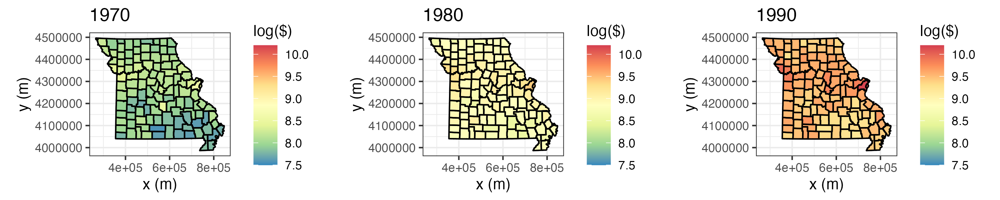
- Sydney radar reflectivity. These data are a subset of consecutive weather radar reflectivity images considered in the World Weather Research Programme (WWRP) Sydney 2000 Forecast Demonstration Project. There are 12 images at 10-minute intervals starting at 08:25 UTC on 03 November, 2000 (i.e., 08:25–10:15 UTC). The data were originally mapped to a \(45 \times 45\) grid of 2.5 km pixels centered on the radar location. The data used in this book are for a region of dimension \(28 \times 40\), corresponding to a 70 km by 100 km domain. All reflectivities are given in “decibels relative to Z” (dBZ, a dimensionless logarithmic unit used for weather radar reflectivities). We refer to this data set as the “Sydney radar data set.” For more details on these data, shown in Figure 2.5, see Xu et al. (2005).
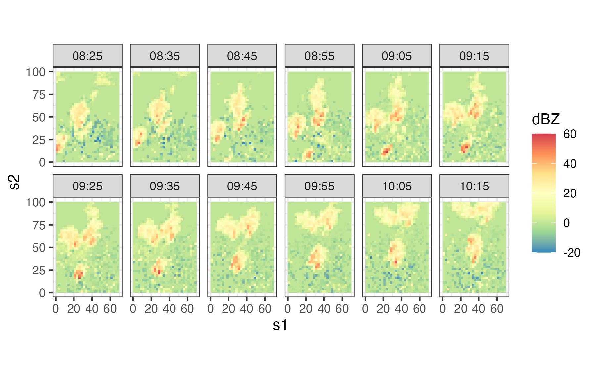
- Mediterranean winds. These data are east–west (\(u\)) and north–south (\(v\)) wind-component observations over the Mediterranean region (from 6.5\(^\circ\)W–16.5\(^\circ\)E and 33.5\(^\circ\)N–45.5\(^\circ\)N) for 28 time periods (every 6 hours) from 00:00 UTC on 29 January 2005 to 18:00 UTC on 04 February 2005. There are two data sources: satellite wind observations from the QuikSCAT scatterometer, and surface winds and pressures from an analysis by the European Center for Medium Range Weather Forecasting (ECMWF). The ECMWF-analysis winds and pressures are given on a \(0.5^\circ \times 0.5^\circ\) spatial grid (corresponding to 47 longitude locations and 25 latitude locations), and they are available at each time period for all locations. The QuikSCAT observations are only available intermittently in space, due to the polar orbit of the satellite, but at much higher spatial resolution (25 km) than the ECMWF data when they are available. The QuikSCAT observations given for each time period correspond to all observations available in the spatial domain within 3 hours of time periods stated above. There are no QuikSCAT observations available at 00:00 UTC and 12:00 UTC in the spatial domain and time periods considered here. We refer to this data set as the “Mediterranean winds data set.” Figure 2.6 shows the wind vectors (“quivers”) for the ECMWF data at 06:00 UTC on 01 February 2005. These data are a subset of the data described in Cressie & Wikle (2011) and Milliff et al. (2011).

2.2 Representation of Spatio-Temporal Data in R
Although there are many ways to represent spatial data and time-series data in R, there are relatively few ways to represent spatio-temporal data. In this book we use the class definitions defined in the R package spacetime. These classes extend those used for spatial data in sp and time-series data in xts. For details, we refer the interested reader to the package documentation and vignettes in Pebesma (2012). Here, we just provide a brief introduction to some of the concepts that facilitate thinking about spatio-temporal data structures.
Although spatio-temporal data can come in quite sophisticated relational forms, they most often come in the form of fairly simple “tables.” Pebesma (2012) classifies these simple tables into three classes:
- time-wide, where columns correspond to different time points;
- space-wide, where columns correspond to different spatial features (e.g., locations, regions, grid points, pixels);
- long formats, where each record corresponds to a specific time and space coordinate.
Tip
Data in long format are space inefficient, as spatial coordinates and time attributes are required for each data point, whether or not data are on a lattice. However, it is easy to subset and manipulate data in long format. Powerful “data wrangling” tools in packages such as dplyr and tidyr, and visualization tools in ggplot2, are designed for data in long format.
Tables are very useful elementary data objects. However, an object from the spacetime package contains additional information, such as the map projection and the time zone. Polygon objects may further contain the individual areas of the polygons as well as the individual bounding boxes. These objects have elaborate, but consistent, class definitions that greatly aid the geographical (e.g., spatial) component of the analysis.
Pebesma (2012) considers four classes of space-time data:
- full grid (
STF), a combination of any sp object and any xts object to represent all possible locations on the implied space-time lattice; - sparse grid (
STS), asSTF, but contains only the non-missing space-time combinations on a space-time lattice; - irregular (
STI), an irregular space-time data structure, where each point is allocated a spatial coordinate and a time stamp; - simple trajectories (
STT), a sequence of space-time points that form trajectories.
Note that the “grid” in the first two classes corresponds to a space-time lattice — but the spatial locations may or may not be on a lattice! The sparse grid is most effective when there are missing observations, or when there are a relatively few spatial locations that have different time stamps, or when there are a relatively small number of times that have differing spatial locations.
It is important to note that the class objects that make up the spacetime package are not used to store data; this is accomplished through the use of the R data frame. As illustrated in Lab 2.1 at the end of this chapter and in Pebesma (2012), there are several important methods in sp and spacetime that help with the construction and manipulation of these spatio-temporal data sets. In particular, there are methods to construct an object, replace/select data or various spatial or temporal subsets, coerce spatio-temporal objects to other classes, overlay spatio-temporal observations, and aggregate over space, time, or space-time.
Tip
When spatio-temporal data have non-trivial support (i.e., a spatio-temporal region over which a datum is defined), and if the geometry allows it, use SpatialPixels and not SpatialPolygons as the underlying sp object. This results in faster geometric manipulations such as when finding the overlap between points and polygons using the function over.
2.3 Visualization of Spatio-Temporal Data
A picture – or a video – can be worth a thousand tables. Use of maps, color, and animation is a very powerful way to provide insight that suggests exploratory data analysis that then leads to spatio-temporal models (Chapters 3–5). Although there are distinct challenges in visualizing spatio-temporal data due to the fact that several dimensions often have to be considered simultaneously (e.g., two or three spatial dimensions and time), there are some fairly common tools that can help explore such data visually. For the most part, we are somewhat selective in what we present here as we want to convey fairly simple methods that have consistently proven useful in our own work and in the broader literature. These can be as simple as static spatial maps and time-series plots, or they can be interactive explorations of the data (Lamigueiro, 2018). In addition, because of the special dynamic component of many spatio-temporal processes, where spatial processes evolve through time, it is often quite useful to try to visualize this evolution. This can be done in the context of one-dimensional space through a space-time (Hovmöller) plot, or more generally through animations. We conclude by discussing an increasingly popular approach to help with visualization of very high-dimensional data.
Tip
Spatio-temporal visualization in R generally proceeds using one of two methods: the trellis graph or the grammar of graphics. The command plot invokes the trellis graph when sp or spacetime objects are supplied as arguments. The commands associated with the package ggplot2 invoke the grammar of graphics. The data objects frequently need to be converted into a data frame in long format for use with ggplot2, which we often use throughout this book.
2.3.1 Spatial Plots
Snapshots of spatial processes for a given time period can be plotted in numerous ways. If the observations are irregular in space, then it is often useful to plot a symbol at the data location and give it a different color and/or size to reflect the value of the observation. For example, consider Tmax for 01 May 1993 from the NOAA data set plotted in the left panel of Figure 2.1. In this case, the circle center corresponds to the measurement location and the color of the filled-in circle corresponds to the value of the maximum temperature. Notice the clear visual trend of decreasing temperatures from the southeast to the northwest over this region of the USA.
Spatial plots of gridded data are often presented as contour plots, so-called “image” plots, or surface plots. For example, Figure 2.2 shows image representations for three individual months of the Pacific SST data set. Note the La Niña signal (cooler than normal SSTs) in 1989 and the El Niño signal (warmer than normal SSTs) in 1998 in the tropical Pacific Ocean. Figure 2.7 shows contour and surface representations of the SST anomalies in January 1998, corresponding to the right panel (i.e., the El Niño event) in Figure 2.2.
It is often useful to plot a sequence of spatial maps for consecutive times to gain greater insight into the changes in spatial patterns through time. Figure 2.8 shows a sequence of SST spatial maps for the months January–June 1989. Note how the initially strong La Niña event dissipates by June 1989.
Tip
Multiple time-indexed spatial maps can be plotted from one long-format table using the functions facet_grid or facet_wrap in ggplot2 with time as a grouping variable.

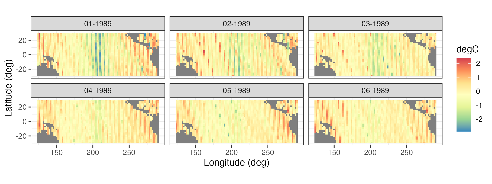
2.3.2 Time-Series Plots
It can be instructive to plot time series corresponding to an observation location, an aggregation of observations, or multiple locations simultaneously. For example, Figure 2.9 shows time-series plots of daily Tmax for 10 of the NOAA stations (chosen randomly from the 139 stations) for the time period 01 May 1993–30 September 1993. The time-series plots are quite noisy, as is to be expected from the variability inherent in mid-latitude weather systems. However, there is an overall temporal trend corresponding to the annual seasonal cycle. That is, all of the time series appear to peak somewhat towards the center of the time horizon, which corresponds to the month of July. In this case, since we are using only five months of data, this trend appears to be roughly quadratic in time. Periodic functions are often used when considering a whole year or multiple years of data, especially with weather and economic data. Although all of these temperature series contain a seasonal component, some appear shifted on the vertical axis (Tmax) relative to one another (e.g., station 13881 has higher temperatures than station 14897). This is due to the latitudinal trend apparent in Figure 2.1.
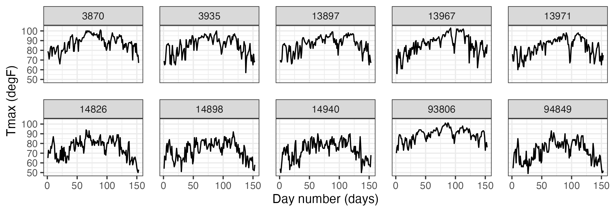
2.3.3 Hovmöller Plots
A Hovmöller plot Hovmöller (1949) is a two-dimensional space-time visualization in which space is collapsed (projected or averaged) onto one dimension and where the second dimension denotes time. These plots have traditionally been considered in the atmospheric-science and ocean-science communities to visualize propagating features. For example, the left panel of Figure 2.10 shows monthly SST anomalies averaged from \(1^\circ\)S–\(1^\circ\)N and plotted such that longitude (over the Pacific Ocean) is on the \(x\)-axis and time (from 1996 to 2003) is on the \(y\)-axis (increasing from top to bottom). The darker red colors correspond to warmer than normal temperatures (i.e., El Niño events) and the darker blue colors correspond to colder than normal temperatures (i.e., La Niña events). Propagation through time is evident if a coherent color feature is “slanted.” In this plot, one can see several cases of propagating features along the longitudinal axis (e.g., both of the major La Niña events show propagation from the eastern longitudes towards the western longitudes).
Hovmöller plots are straightforward to generate with regular spatio-temporal data, but they can also be generated for irregular spatio-temporal data after suitable interpolation to a regular space-time grid. For example, in Figure 2.11, we show Hovmöller plots for the Tmax variable in the NOAA data set between 01 May 1993 and 30 September 1993. We see that the temporal trend is fairly constant with longitude (left panel), but it decreases considerably with increasing latitude (right panel) as expected, since overall maximum temperature decreases with increasing latitude in the conterminous USA. Such displays may affect modeling decisions of the trend (e.g., a time–latitude interaction might become evident in such plots).
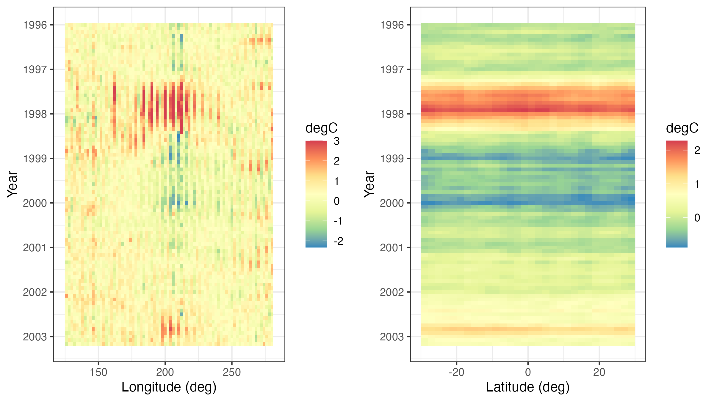
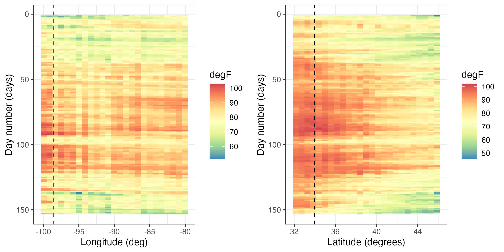
Tmax variable in the NOAA data set between 01 May 1993 and 30 September 1993, where the data are interpolated as described in Lab 2.2. The color denotes the maximum temperature in \(^\circ\)F. The dashed lines correspond to the longitude and latitude coordinates of station 13966 (compare to Figure 2.9).
2.3.4 Interactive Plots
Programming tools for interactive visualization are becoming increasingly accessible. These tools typically allow for a more data-immersive experience, and they allow one to explore the data without having to resort to scripting. In the simplest of cases, one can “hover” a cursor over a figure, and some information related to the data corresponding to the current location of the cursor is conveyed to the user. For example, in Figure 2.12 we show the interaction of the user with a spatial plot of SST using the package plotly. This package works in combination with a web portal for more advanced exploration methods (e.g., the exploration of three-dimensional data).
There are several interactive plots that may aid with the visualization of spatio-temporal data. One of the most useful plots builds on linked brushing, with the link acting between time and space. Here, one hovers a cursor over a spatial observation or highlights a spatial area, and then the time series corresponding to that point or area is visualized; see Figure 2.12. This allows one to explore the time series corresponding to known geographic areas with minimal effort. Code for generating a linked brush is available from the book’s website (https://spacetimewithr.org).

ggplotly from the package plotly (left). A linked brush can be used to explore the time series (right) corresponding to a user-chosen set of spatial locations (middle) with the package ggvis.
2.3.5 Animations
Everyone loves a movie. Animation captures our attention and can suggest structure in a way that a sequence of still frames cannot. Good movies should be watched again and again for understanding why the spatio-temporal data behave the way they do.
An animation is typically constructed by plotting spatial data frame-by-frame, and then stringing them together in sequence. When doing so, it is important to ensure that all spatial axes and color scales remain constant across all frames. In situations with missing or unequally spaced observations, one may sometimes improve the utility of an animation by performing a simple interpolation (in space and/or time) before constructing the sequence. Animations in R can be conveniently produced using the package animation. We provide an example using this package in Lab 2.2.
2.3.6 Trelliscope: Visualizing Large Spatio-Temporal Data Sets
Most spatio-temporal statistical analyses to date have been carried out on manageable data sets that can fit into a computer’s memory which, at the time of writing, was in the order of a few tens or a couple of hundreds of gigabytes in size. Being able to visualize these data is important and useful in many respects. Proceeding with modeling and prediction where not all the data can be processed in a single place (known as parallel-data algorithms) is an active area of research and will not be discussed here.
The Trelliscope system, available with the package trelliscope, helps users visualize massive data sets. The first advantage of trelliscope is that it facilitates exploration when, due to their size, the data may only be visualized using hundreds or thousands of plots (or panels). The Trelliscope system can calculate subset summaries (known as cognostics) that are then used for filtering and sorting the panels. For example, consider the SST data set. If a grouping is made by month, then there are over 300 spatial maps that can be visualized between, say, 1970 and 2003. Alternatively, one may decide to visualize only those months in which the SST exceeded a certain maximum or minimum threshold. One can formulate a cognostic using the monthly spatial mean values of SST averaged over their spatial domain and visualize them in a quantile plot (see Figure 2.13). The analyst can use this approach to quickly view the strongest El Niño and La Niña events in this time period.
The second advantage is that the trelliscope package is designed to visualize data that are on a distributed file system that may be residing on more than one node. The data are processed in a divide and recombine fashion; that is, the data are divided and processed by group in parallel fashion and then recombined. In trelliscope, this can be useful for generating both the cognostics and the viewing panels efficiently. Therefore, the Trelliscope system provides a way to visualize terabytes of space-time data but, as quoted in its package manual, it “can also be very useful for small data sets.”
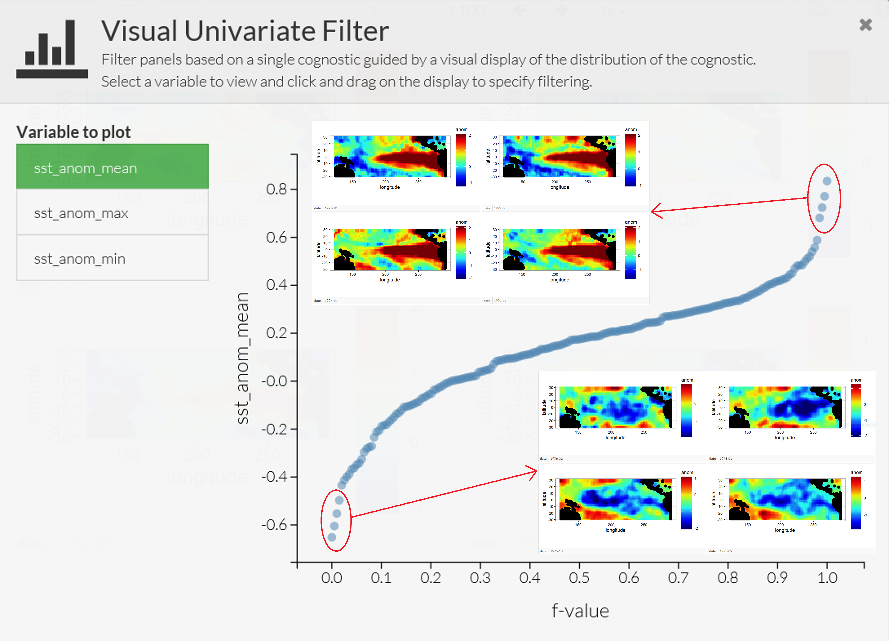
Tip
Processing and visualizing large data sets residing on a distributed file system using divide and recombine may seem like a daunting task. The R package datadr, which can be used together with trelliscope, provides an easy-to-use front-end for data residing on distributed file systems. More importantly, it reduces the barrier to entry by allowing the same, or very similar, code to be used for data residing in memory and data residing on a distributed file system such as Hadoop.
2.3.7 Visualizing Uncertainty
One of the main things that separates statistics from other areas of data science is the focus on uncertainty quantification. Uncertainties could be associated with data (e.g., measurement error in satellite observations or sampling error in a survey), estimates (e.g., uncertainty in regression parameter estimates), or predictions (e.g., uncertainties in a forecast of SST anomalies). Taking a Bayesian point of view, uncertainties could also be associated with the parameters themselves. In the case where these uncertainties are indexed in time, space, or space-time, one can use any of the methods discussed in this section to produce visualizations of these uncertainties. It is increasingly the case that one seeks methods to visualize both the values of interest and their uncertainty simultaneously. This is challenging given the difficulties in visualizing information in multiple dimensions, and it is an active area of research both in geography and statistics (see, for example, the discussion of “visuanimation” in Genton et al. (2015)). For a recent overview in the case of areal data, and an accompanying R vignette, see Lucchesi & Wikle (2017) and the R package Vizumap (https://doi.org/10.5281/zenodo.1479951).
2.4 Exploratory Analysis of Spatio-Temporal Data
Visualization of data is certainly an important and necessary component of exploratory data analysis. In addition, we often wish to explore spatio-temporal data in terms of summaries of first-order and second-order characteristics. Here we consider visualizations of empirical means and empirical covariances, spatio-temporal covariograms and semivariograms, the use of empirical orthogonal functions and their associated principal-component time series, and spatio-temporal canonical correlation analysis. To do this, we have to start using some mathematical symbols and formulas. Mathematics is the language of science (and of statistical science), and we introduce this language along the way to help readers who are a bit less fluent. For reference, we present some fundamental definitions of vectors and matrices and their manipulation in Appendix A. Readers who are not familiar with the symbols and basic manipulation of vectors and matrices would benefit from looking at this material before proceeding.
2.4.1 Empirical Spatial Means and Covariances
It can be useful to explore spatio-temporal data by examining the empirical means and empirical covariances. Assume for the moment that we have observations \(\{Z(\mathbf{s}_i;t_j)\}\) for spatial locations \(\{\mathbf{s}_i: i=1,\ldots,m\}\) and times \(\{t_j: j=1,\ldots,T\}\).
The empirical spatial mean for location \(\mathbf{s}_i\), \(\widehat{\mu}_{z,s}(\mathbf{s}_i)\), is then found by averaging over time:
\[ \widehat{\mu}_{z,s}(\mathbf{s}_i) \equiv \frac{1}{T} \sum_{j=1}^T Z(\mathbf{s}_i;t_j). \]
If we consider the means for all spatial data locations and assume that we have \(T\) observations at each location, then we can write down the spatial mean as an \(m\)-dimensional vector, \(\widehat{\boldsymbol{\mu}}_{z,s}\), where
\[ \widehat{\boldsymbol{\mu}}_{z,s} \equiv \left[\begin{array}{c} \widehat{\mu}_{z,s}(\mathbf{s}_1) \\ \vdots \\ \widehat{\mu}_{z,s}(\mathbf{s}_m) \end{array} \right] = \begin{bmatrix} \displaystyle\frac{1}{T}\sum_{j=1}^T Z(\mathbf{s}_1;t_j) \\ \vdots \\ \displaystyle\frac{1}{T}\sum_{j=1}^T Z(\mathbf{s}_m;t_j) \end{bmatrix} = \frac{1}{T}\sum_{j=1}^T\mathbf{Z}_{t_j}, \tag{2.1}\]
and \(\mathbf{Z}_{t_j} \equiv (Z(\mathbf{s}_1;t_j),\ldots, Z(\mathbf{s}_m;t_j))'\).
This mean vector is a spatial quantity whose elements are indexed by their location. Therefore, it can be plotted on a map, as in the case of the maximum temperature in the NOAA data set (see Figure 2.1), or as a function of the spatial coordinates (e.g., longitude or latitude) as in Figure 2.14. From these plots one can see that there is a clear trend in the empirical spatial mean of maximum temperature with latitude, but not so much with longitude. Note that one may not have the same number of observations at each location to calculate the average, in which case each location in space must be calculated separately (e.g., \(\widehat{\mu}_{z,s}(\mathbf{s}_i) = (1/T_i) \sum_{j=1}^{T_i} Z(\mathbf{s}_i;t_j)\), where \(T_i\) is the number of time points at which there are data at location \(\mathbf{s}_i\)).
Additionally, one can average across space and plot the associated time series. The empirical temporal mean for time \(t_j\), \(\widehat{\mu}_{z,t}(t_j)\), is given by
\[ \widehat{\mu}_{z,t}(t_j) \equiv \frac{1}{m} \sum_{i=1}^m Z(\mathbf{s}_i;t_j). \tag{2.2}\]
For example, Figure 2.15 shows the time series of Tmax for the NOAA temperature data set averaged across all of the spatial locations. This plot of the empirical temporal means shows the seasonal nature of the mid-latitude temperature over the central USA, but it also shows variations in that seasonal pattern due to specific large-scale weather systems.
Tip
Computing empirical means is quick and easy using functions in the package dplyr. For example, to find a temporal average, the data in a long-format data frame can first be grouped by spatial location using the function group_by. A mean can then be computed for every spatial location using the function summarise. See Lab 2.1 for more details on these functions.

Tmax (in \(^\circ\)F) as a function of station longitude (left) and station latitude (right).
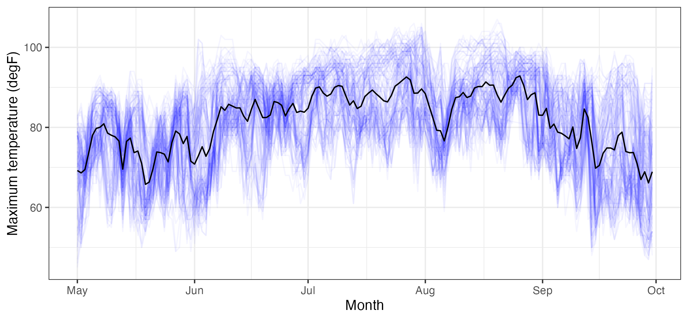
Tmax data (in \(^\circ\)F), from the NOAA data set (blue lines, where each blue line corresponds to a station) and the empirical temporal mean \(\widehat\mu_{z,t}(\cdot)\) (black line), with \(t\) in units of days, ranging from 01 May 1993 to 30 September 1993.
It is often useful to consider the empirical spatial covariability in the spatio-temporal data set. This covariability can be used to determine to what extent data points in the data set covary (behave similarly) as a function of space and/or time.
In the context of the data described above, the empirical lag-\(\tau\) covariance between spatial locations \(\mathbf{s}_i\) and \(\mathbf{s}_k\) is given by
\[ \widehat{C}_z^{(\tau)}(\mathbf{s}_i,\mathbf{s}_k) \equiv \frac{1}{T- \tau} \sum_{j=\tau + 1}^T (Z(\mathbf{s}_i;t_j) - \widehat{\mu}_{z,s}(\mathbf{s}_i)) (Z(\mathbf{s}_k;t_j - \tau) - \widehat{\mu}_{z,s}(\mathbf{s}_k)), \tag{2.3}\]
for \(\tau = 0,1,\ldots,T-1\), which is called the empirical lag-\(\tau\) spatial covariance.
Note that this is the average (over time) of the cross products of the centered observations at the two locations (\(\mathbf{s}_i\) and \(\mathbf{s}_k\)); that is, it is a summary of the covariation of these data. It is often useful to consider the \(m \times m\) lag-\(\tau\) empirical spatial covariance matrix, \(\widehat{\mathbf{C}}_z^{(\tau)}\), where the \((i,k)\)th element is given by the formula above. Alternatively, this can be calculated directly by
\[ \widehat{\mathbf{C}}_z^{(\tau)} \equiv \frac{1}{T - \tau}\sum_{j= \tau + 1}^T(\mathbf{Z}_{t_j} - \widehat{\boldsymbol{\mu}}_{z,s})(\mathbf{Z}_{t_j-\tau} - \widehat{\boldsymbol{\mu}}_{z,s})';\quad \tau = 0,1,\dots,T-1. \tag{2.4}\]
Thus, in order to find the lag-\(\tau\) covariance matrices, we consider the cross products of the residual vectors for each spatial location and each time point relative to its corresponding time-averaged empirical spatial mean.
In general, it can be difficult to obtain any intuition from these matrices, since locations in a two-dimensional space do not have a natural ordering. However, one can sometimes gain insight by splitting the domain into “strips” corresponding to one of the spatial dimensions (e.g., longitudinal strips) and then plotting the associated covariance matrices for those strips. For example, Figure 2.16 shows empirical covariance matrices for the maximum temperature in the NOAA data set (after, as shown in Lab 2.3, a quadratic trend in time has been removed), split into four longitudinal strips. Not surprisingly, these empirical spatial covariance matrices reveal the presence of spatial dependence in the residuals. The lag-0 plots seem to be qualitatively similar, suggesting that there is no strong correlational dependence on longitude but that there is a correlational dependence on latitude, with the spatial covariance decreasing with decreasing latitude.
We can also calculate the empirical lag-\(\tau\) cross-covariance matrix between two spatio-temporal data sets, \(\{\mathbf{Z}_{t_j}\}\) and \(\{\mathbf{X}_{t_j}\}\), where \(\{\mathbf{X}_{t_j}\}\) corresponds to data vectors at \(n\) different locations (assumed to correspond to the same time points). We define this \(m \times n\) matrix by
\[ \widehat{\mathbf{C}}_{z,x}^{(\tau)} \equiv \frac{1}{T-\tau} \sum_{j=\tau+1}^T ({\mathbf{Z}}_{t_j} - \widehat{\boldsymbol{\mu}}_{z,s})({\mathbf{X}}_{t_j - \tau} - \widehat{\boldsymbol{\mu}}_{x,s})', \tag{2.5}\]
for \(\tau=0,1,\ldots,T-1\), where \(\widehat{\boldsymbol{\mu}}_{x,s}\) is the empirical spatial mean vector for \(\{\mathbf{X}_{t_j}\}\). Cross-covariances may be useful in characterizing the spatio-temporal dependence relationship between two different variables, for example maximum temperature and minimum temperature.
Although not as common in spatio-temporal applications, one can also calculate empirical temporal covariance matrices averaging across space (after removing temporal means averaged across space). In this case, the time index is unidimensional and ordered, so one does not have to work as hard on the interpretation as we did with empirical spatial covariance matrices.
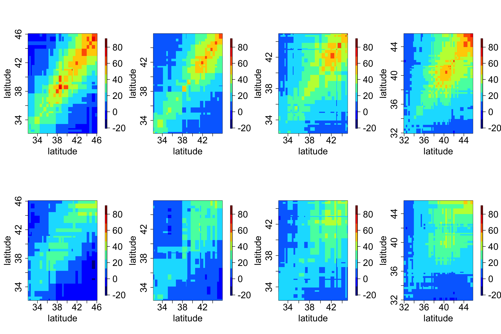
2.4.2 Spatio-Temporal Covariograms and Semivariograms
In Chapter 4 we shall see that it is necessary to characterize the joint spatio-temporal dependence structure of a spatio-temporal process in order to perform optimal prediction (i.e., kriging). Thus, for measures of the joint spatio-temporal dependence, we consider empirical spatio-temporal covariograms (and their close cousins, semivariograms). The biggest difference between what we are doing here and the covariance estimates in the previous section is that we are interested in characterizing the covariability in the spatio-temporal data as a function of specific lags in time and in space. Note that the lag in time is a scalar, but the lag in space is a vector (corresponding to the displacement between locations in \(d\)-dimensional space).
Consider the empirical spatio-temporal covariance function for various space and time lags. Here, we make an assumption that the first moment (mean) depends on space but not on time and that the second moment (covariance) depends only on the lag differences in space and time. Then the empirical spatio-temporal covariogram for spatial lag \(\mathbf{h}\) and time lag \(\tau\) is given by
\[ \widehat{C}_z(\mathbf{h};\tau) = \frac{1}{|N_{\mathbf{s}}(\mathbf{h})|}\frac{1}{|N_t(\tau)|} \sum_{\mathbf{s}_i,\mathbf{s}_k \in N_{\mathbf{s}}(\mathbf{h})} \sum_{t_j,t_{\ell} \in N_t(\tau)} (Z(\mathbf{s}_i;t_j)-\widehat{\mu}_{z,s}(\mathbf{s}_i))(Z(\mathbf{s}_k;t_\ell)-\widehat{\mu}_{z,s}(\mathbf{s}_k)), \tag{2.6}\]
where you will recall that \(\widehat{\mu}_{z,s}(\mathbf{s}_i) = (1/T) \sum_{j=1}^T Z(\mathbf{s}_i;t_j)\), \(N_{\mathbf{s}}(\mathbf{h})\) refers to the pairs of spatial locations with spatial lag within some tolerance of \(\mathbf{h}\), \(N_t(\tau)\) refers to the pairs of time points with time lag within some tolerance of \(\tau\), and \(|N(\cdot)|\) refers to the number of elements in \(N(\cdot)\). Under isotropy, one often considers the lag only as a function of distance, \(h = ||\mathbf{h}||\), where \(|| \cdot ||\) is the Euclidean norm (see Appendix A).
Note 2.1: Semivariogram
The semivariogram is defined as \[ \gamma_z(\mathbf{s}_i, \mathbf{s}_k; t_j, t_{\ell}) \equiv \frac{1}{2} \textrm{var}(Z(\mathbf{s}_i;t_j) - Z(\mathbf{s}_k;t_{\ell})). \] In the case where the covariance depends only on displacements in space and differences in time, this can be written as \[ \begin{aligned} \gamma_z(\mathbf{h};\tau) &= \frac{1}{2} \textrm{var}(Z(\mathbf{s}+ \mathbf{h}; t+ \tau) - Z(\mathbf{s}; t)) \\ &= C_z(\mathbf{0};0) - \textrm{cov}(Z(\mathbf{s}+ \mathbf{h}; t + \tau), Z(\mathbf{s};t)) \\ &= C_z(\mathbf{0};0) - C_z(\mathbf{h};\tau) \end{aligned} \tag{2.7}\] where \(\mathbf{h}= \mathbf{s}_k - \mathbf{s}_i\) is a spatial lag and \(\tau = t_{\ell} - t_j\) is a temporal lag.
Now, Equation 2.7 does not always hold. It is possible that \(\gamma_z\) is a function of spatial lag \(\mathbf{h}\) and temporal lag \(\tau\), but there is no stationary covariance function \(C_z(\mathbf{h};\tau)\). We generally try to avoid these models of covariability by fitting trend terms that are linear and/or quadratic in spatio-temporal coordinates.
If the covariance function of the process is well defined, then the semivariogram is generally characterized by the nugget effect, the sill, and the partial sill. The nugget effect is given by \(\gamma_z(\mathbf{h};\tau)\) when \(\mathbf{h}\rightarrow {\bf 0}\) and \(\tau \rightarrow 0\), while the sill is \(\gamma_z(\mathbf{h};\tau)\) when \(\mathbf{h}\rightarrow \infty\) and \(\tau \rightarrow \infty\). The partial sill is the difference between the sill and the nugget effect. The diagram below shows these components of a semivariogram as a function of spatial distance \(\|\mathbf{h}\|\).

In some kriging applications, one might be interested in looking at the empirical spatio-temporal semivariogram (see Note 2.1). The empirical semivariogram, for the case where the covariance only depends on the displacements in space and the time lags, is obtained from Equation 2.6 as \(\widehat{\gamma}_z(\mathbf{h};\tau) = \widehat{C}_z({\mathbf{0}};0) - \widehat{C}_z(\mathbf{h};\tau)\), and so it is easy to go back and forth between the empirical semivariogram and the covariogram in this case (see the caveat in Note 2.1). Assuming a constant spatial mean \(\mu_{z,s}\), then Equation 2.7 can be equivalently written as \[ \gamma_z(\mathbf{h};\tau) = \frac{1}{2} E\left(Z(\mathbf{s}+ \mathbf{h}; t+ \tau) - Z(\mathbf{s};t)\right)^2, \] and hence an alternative estimate is \[ \widehat{\gamma}_z(\mathbf{h};\tau) = \frac{1}{2} \frac{1}{|N_{\mathbf{s}}(\mathbf{h})|}\frac{1}{|N_t(\tau)|} \sum_{\mathbf{s}_i,\mathbf{s}_k \in N_{\mathbf{s}}(\mathbf{h})} \sum_{t_j,t_{\ell} \in N_t(\tau)} (Z(\mathbf{s}_i;t_j)- Z(\mathbf{s}_k;t_\ell))^2, \tag{2.8}\] where the notation in Equation 2.8 is the same as used above in Equation 2.6. Note that this calculation does not need any information about the spatial means.
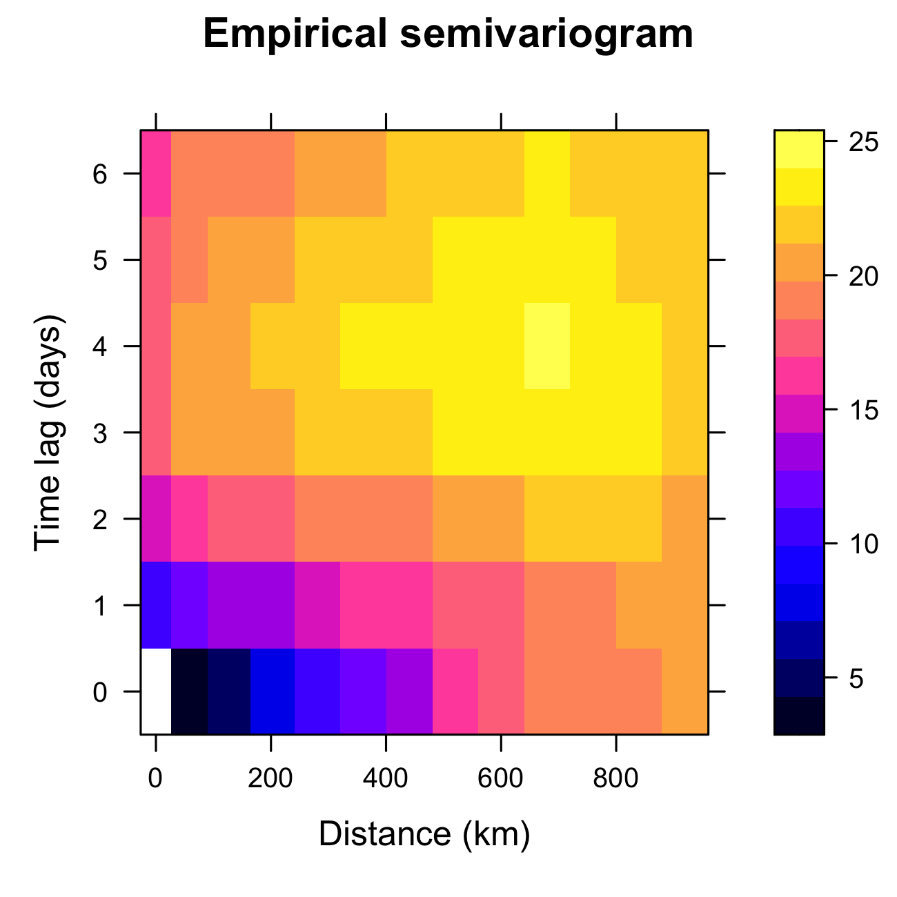
Tmax from the NOAA data set during July 2003, computed using the function variogram in gstat.
2.4.3 Empirical Orthogonal Functions (EOFs)
Empirical orthogonal functions (EOFs) can reveal spatial structure in spatio-temporal data and can also be used for subsequent dimensionality reduction. EOFs came out of the meteorology/climatology literature, and in the context of discrete space and time, EOF analysis is the spatio-temporal manifestation of principal component analysis (PCA) in statistics (Cressie & Wikle, 2011). In the terminology of this chapter, one should probably modify “EOFs” to empirical spatial orthogonal functions, since they are obtained from an empirical spatial covariance matrix, but for legacy reasons we stick with “EOFs.” Before we discuss EOFs, we give a brief review of PCA.
Brief Review of Principal Component Analysis
Assume we have two measured traits on a subject of interest (e.g., measurements of \(x_1 = \mbox{height}\) (in cm) and \(x_2 = \mbox{weight}\) (in kg) in a sample of women in the USA). Figure 2.18 (left panel) shows a (simulated) plot of what such data might look like for \(m=500\) individuals. We note that these data are quite correlated, as expected. Now, we wish to construct new variables that are linear combinations of the measured traits, say \(a_1 = w_{11} x_1 + w_{12} x_2\) and \(a_2 = w_{21} x_1 + w_{22} x_2\). One way to think of this is that we are “projecting” the original data onto new axes given by the variables \(a_1\) and \(a_2\). Figure 2.18 (center and right panels) shows two possible projections, which differ according to the values we choose for the weights, \(\{w_{11}, w_{12}, w_{21}, w_{22}\}\). Note that in the case of the right-hand panel in Figure 2.18, the new axis \(a_1\) aligns with the axis of largest variation, and the new axis \(a_2\) corresponds to the axis of largest variation perpendicular (orthogonal) to the axis \(a_1\). Maximizing these axes of variation subject to orthogonality helps us think about decomposing the data into lower-dimensional representations in an optimal way. That is, the new variable on the axis \(a_1\) represents the optimal linear combination of the data that accounts for the most variation in the original data. If the variation along the other axis (\(a_2\)) is fairly small relative to \(a_1\), then it might be sufficient just to consider \(a_1\) to represent the data.

How does one go about choosing the weights \(\{w_{ij}\}\)? Let \({\mathbf{x}}_i = (x_{1i},\ldots, x_{pi})'\) be a random vector with variance–covariance matrix \({\mathbf{C}}_x\). Note from Appendix A that by spectral decomposition, a \(p \times p\) non-negative-definite, symmetric, real matrix, \({\mathbf{\Sigma}}\), can be diagonalized such that \({\mathbf{W}}' {\mathbf{\Sigma}} {\mathbf{W}} = {\mathbf{\Lambda}}\) (i.e., \(\boldsymbol{\Sigma}= \mathbf{W}{\mathbf{\Lambda}} \mathbf{W}'\)), where \({\mathbf{\Lambda}}\) is a diagonal matrix containing the eigenvalues \(\{\lambda_i\}\) of \({\mathbf{\Sigma}}\) (where \(\lambda_1 \ge \lambda_2 \ge \ldots \ge \lambda_p \ge 0\)) and \({\mathbf{W}} = [{\mathbf{w}}_1 \; {\mathbf{w}}_2 \; \ldots \; {\mathbf{w}}_p]\) is the associated matrix of orthogonal eigenvectors, \(\{{\mathbf{w}}_i\}\) (i.e., \(\mathbf{W}\mathbf{W}' = \mathbf{W}' \mathbf{W}= \mathbf{I}\)); thus, \({\mathbf{C}}_x = {\mathbf{W}} {\mathbf{\Lambda}}_x {\mathbf{W}}'\). It can be shown that these eigenvectors give the optimal weights, so that \({\mathbf{w}}_1\) are the weights for \(a_1\) and \({\mathbf{w}}_2\) are the weights for \(a_2\), and so on.
As an example, consider the variance–covariance matrix associated with the simulated height and weight traits, where \(p=2\): \[
{\mathbf{C}}_x = \left( \begin{array}{rr}
81 & 50 \\
50 & 49
\end{array} \right).
\] Then \({\mathbf{W}}\) and \({\mathbf{\Lambda}}_x\) are given (using the function eigen in R) by \[
{\mathbf{W}} = \left( \begin{array}{rr}
-0.8077 & 0.5896 \\
-0.5896 & -0.8077
\end{array} \right), \quad
{\mathbf{\Lambda}}_x = \left( \begin{array}{rr}
117.5 & 0 \\
0 & 12.5
\end{array} \right).
\] So, for each of the observation vectors, \(\{{\mathbf{x}}_i, i=1,\ldots,500\}\), we make new variables \[
a_{1i} = -0.8077 x_{1i} - 0.5896 x_{2i}
\] \[
a_{2i} = 0.5896 x_{1i} - 0.8077 x_{2i}.
\] These coefficients (which are the data projected onto axes \((a_1,a_2)\)) are plotted in Figure 2.19. Note that these new variables are uncorrelated (no slant to the points in the plot) and the first axis (\(a_1\)) corresponds to the one that has the most variability. In PCA, one sometimes attempts to interpret the “loadings” given by \(\{\mathbf{w}_i: i =1,\ldots, p\}\) (or some scaled version of them). That is, one contrasts the signs and magnitudes of the loadings within a given eigenvector (e.g., the first eigenvector, \({\mathbf{w}}_1 = (-0.8077, -0.5896)'\), suggests that both height and weight are important and vary in the same way, so that the first principal component might represent an overall “size” attribute).

The notions presented in the example above extend to more than just two traits and, in general, the principal-component decomposition has some nice properties. For example, the \(k\)th eigenvalue is the variance of the associated linear combination of the elements of \(\mathbf{x}\); that is, \(\textrm{var}(a_k) = \textrm{var}({\mathbf{w}}_k' {\mathbf{x}})= \lambda_k\). In addition, \[ \textrm{var}(x_1) + \ldots + \textrm{var}(x_p) = \textrm{trace}({\mathbf{C}}_x) = \lambda_1 + \ldots + \lambda_p = \textrm{var}(a_1) + \ldots + \textrm{var}(a_p). \] Thus, one can consider the proportion of the total variance accounted for by the \(k\)th principal component, which is \(\lambda_k/\sum_{j=1}^p \lambda_j\). In the example above, the first principal component accounts for about 90% of the variance in the original data (i.e., \(\lambda_1/(\lambda_1 + \lambda_2)= 117.5/130 = 0.90\)).
Of course, in practice we would not know the covariance matrix, \(\mathbf{C}_x\), but we can calculate an empirical covariance matrix using Equation 2.4 with \(\tau = 0\), \(\{\mathbf{Z}_{t_j}\}\) replaced by \(\{\mathbf{x}_i\}\), and \(\widehat{\boldsymbol{\mu}}_{z,s}\) replaced by \((1/500) \sum_{i=1}^{500} \mathbf{x}_i\). In that case, the spectral decomposition of \(\widehat{\mathbf{C}}_x\) gives empirical estimates of the eigenvectors \(\widehat{\mathbf{W}}\) and eigenvalues \(\widehat{\boldsymbol{\Lambda}}_x\). The analysis then proceeds with these empirical estimates.
Tip
The PCA routine prcomp is included with base R. When the plot function is used on an object returned by prcomp, the variances of the principal components are displayed. The function biplot returns a plot showing how the observations relate to the principal components.
2.4.3.1 Empirical Orthogonal Functions
The study of EOFs is related to PCA in the sense that the “traits” of the multivariate data vector now are spatially indexed, and the samples are usually taken over time. It is shown in Cressie & Wikle (2011) (Chapter 5) that the EOFs can be obtained from the data through either a spectral decomposition of an empirical (spatial or temporal) covariance matrix or a singular value decomposition (SVD) of a centered data matrix (see Note 2.2).
Let \(\mathbf{Z}_{t_j} \equiv (Z(\mathbf{s}_1;t_j),\ldots,Z(\mathbf{s}_m;t_j))'\) for \(j=1,\ldots,T\). Using Equation 2.4 to estimate the lag-0 spatial covariance matrix, \(\widehat{\mathbf{C}}^{(0)}_z\) (which is symmetric and non-negative-definite), the PCA decomposition is given by the spectral decomposition
\[ \widehat{\mathbf{C}}^{(0)}_z = \boldsymbol{\Psi}\boldsymbol{\Lambda}\boldsymbol{\Psi}' \tag{2.9}\]
where \(\boldsymbol{\Psi}\equiv (\boldsymbol{\psi}_1,\ldots,\boldsymbol{\psi}_m)\) is a matrix of spatially indexed eigenvectors given by the vectors \(\boldsymbol{\psi}_k \equiv (\psi_k(\mathbf{s}_1),\ldots,\psi_k(\mathbf{s}_m))'\) for \(k=1,\ldots,m\), and \(\boldsymbol{\Lambda}\equiv \textrm{diag}(\lambda_1,\ldots,\lambda_m)\) is a diagonal matrix of corresponding non-negative eigenvalues (decreasing down the diagonal). The eigenvectors are called “EOFs” and are often plotted as spatial maps (since they are spatially indexed, which is also why \({\mathbf{\Psi}}\) is used to distinguish them from the more general PCA weights, \({\mathbf{W}}\), above). For \(k=1,\ldots,m\), the so-called \(k\)th principal component (PC) time series are given by \(a_k(t_j) \equiv \boldsymbol{\psi}'_k \mathbf{Z}_{t_j}\), where \(j=1,\ldots,T\). From PCA considerations, the EOFs have the nice property that \(\boldsymbol{\psi}_1\) provides the linear coefficients such that \(\textrm{var}(a_1) = \lambda_1\) is maximized, \(\boldsymbol{\psi}_2\) provides the linear coefficients such that \(\textrm{var}(a_2) = \lambda_2\) accounts for the next largest variance such that \(\textrm{cov}(a_1,a_2) = 0\), and so on. As with the principal components in PCA, the EOFs form a discrete orthonormal basis (i.e., \(\boldsymbol{\Psi}' \boldsymbol{\Psi}= \boldsymbol{\Psi}\boldsymbol{\Psi}' = \mathbf{I}\)).
There are two primary uses for EOFs. First, it is sometimes the case that one can gain some understanding about important spatial patterns of variability in a sequence of spatio-temporal data by examining the EOF coefficient maps (loadings). But care must be taken not to interpret the EOF spatial structures in terms of dynamical or kinematic properties of the underlying process Monahan et al. (2009). Second, these bases can be quite useful for dimension reduction in a random-effects spatial or spatio-temporal representation (see Section 4.4), although again, in general, they are not “optimal” bases in terms of reduced-order dynamical systems.
Note 2.2: Calculating EOFs
As stated above, EOFs can be calculated directly from the spectral decomposition of the empirical lag-0 spatial covariance matrix (Equation 2.9). However, they are more often obtained directly through a singular value decomposition (SVD, see Appendix A), which provides computational benefits in some situations. To see the equivalence, first we show how to calculate the empirical covariance-based EOFs. Let \(\mathbf{Z}\equiv [\mathbf{Z}_1,\ldots,\mathbf{Z}_T]^\prime\) be the \(T \times m\) space-wide data matrix and then let \(\widetilde{\mathbf{Z}}\) be the “detrended” and scaled data matrix,
\[ \widetilde{\mathbf{Z}} \equiv \frac{1}{\sqrt{T-1}}(\mathbf{Z}- \mathbf{1}_T \widehat{\boldsymbol{\mu}}_{z,s}^\prime) \tag{2.10}\]
where \(\mathbf{1}_T\) is a \(T\)-dimensional vector of ones and \(\widehat{\boldsymbol{\mu}}_{z,s}\) is the spatial mean vector given by Equation 2.1. Then it is easy to show that
\[ \mathbf{C}_z^{(0)} = \widetilde{\mathbf{Z}}' \widetilde{\mathbf{Z}} = {\boldsymbol{\Psi}} \boldsymbol{\Lambda}\boldsymbol{\Psi}' \tag{2.11}\]
and the principal component (PC) time series are given by the columns of \(\mathbf{A}= (\sqrt{T-1}) \widetilde{\mathbf{Z}} \boldsymbol{\Psi}\); that is, they are projections of the detrended data matrix onto the EOF basis functions, \({\boldsymbol{\Psi}}\). The normalized PC time series are then given by \(\mathbf{A}_{\mathrm{norm}} \equiv \mathbf{A}\boldsymbol{\Lambda}^{-1/2}\); these are just the PC time series divided by their standard deviation (i.e., the square root of the associated eigenvalue), so that the temporal variance of the normalized time series is equal to one. This normalization allows the \(m\) time series to be plotted on the same scale, leaving their relative importance to be captured by their corresponding eigenvalues.
Now, consider the SVD of the detrended and scaled data matrix,
\[ \widetilde{\mathbf{Z}} = \mathbf{U}\mathbf{D}\mathbf{V}' \tag{2.12}\]
where \(\mathbf{U}\) is the \(T \times T\) matrix of left singular vectors, \(\mathbf{D}\) is a \(T \times m\) matrix containing singular values on the main diagonal, and \(\mathbf{V}\) is an \(m \times m\) matrix containing the right singular vectors, where both \(\mathbf{U}\) and \(\mathbf{V}\) are orthonormal matrices. Upon substituting Equation 2.12 into Equation 2.11, it is easy to see that the EOFs are given by \(\boldsymbol{\Psi}= \mathbf{V}\), and \(\boldsymbol{\Lambda}= \mathbf{D}' \mathbf{D}\). In addition, it is straightforward to show that \(\mathbf{A}= (\sqrt{T-1}) \mathbf{U}\mathbf{D}\) and that the first \(m\) columns of \((\sqrt{T-1}) \mathbf{U}\) correspond to the normalized PC time series, \(\mathbf{A}_{\mathrm{norm}}\). Thus, the advantages of the SVD calculation approach are: (1) we do not need to calculate the empirical spatial covariance matrix; (2) we get the normalized PC time series and EOFs simultaneously; and (3) the procedure still works when \(T < m\). The case of \(T < m\) can be problematic in the covariance context since then \(\mathbf{C}^{(0)}_z\) is not positive-definite, although, as shown in Cressie & Wikle (2011) (Section 5.3.4), in this case one can still calculate the EOFs and PC time series.
Figure 2.20 and Figure 2.21 show the first four EOFs and PC time series for the SST data set. In this case, the number of spatial locations \(m = 2261\), and the number of time points \(T = 399\). The first four EOFs account for slightly more than 60% of the variation in the data. The EOF spatial patterns show strong variability in the eastern and central tropical Pacific, and they are known to be related to the El Niño and La Niña climate patterns that dominate the tropical Pacific SST variability. The corresponding PC time series (particularly for the first EOF) show time periods at which the data project very strongly on this spatial pattern (both in terms of large positive and large negative values), and it can be shown that these times correspond to strong El Niño and La Niña events, respectively.
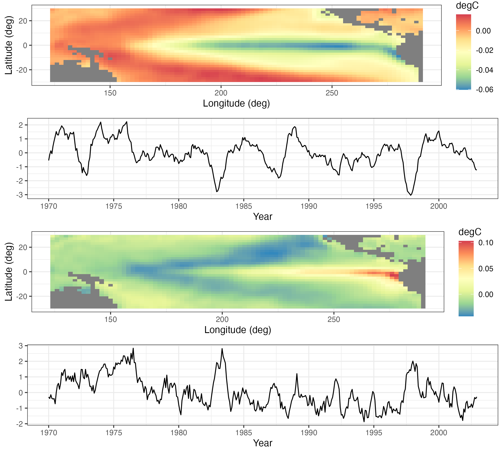
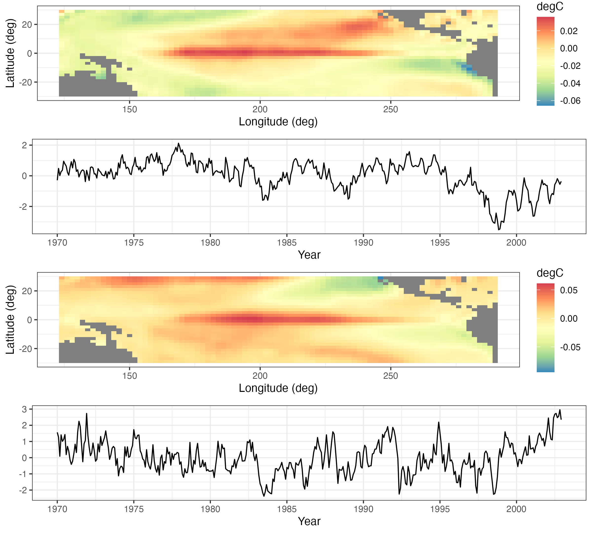
How many EOFs should one consider? This is a long-standing question in PCA, and there are numerous suggestions. Perhaps the simplest is just to consider the number of EOFs that account for some desired proportion of overall variance. Alternatively, one can produce a scree plot, which is a plot of the relative variance associated with each eigenvalue of the EOF as a function of the index of that EOF (see Figure 2.22), and where the sum of all relative variances is 1. One typically sees a fairly quick drop in relative variance with increasing order of the eigenvalue, and then the variance reduction flattens out. It is sometimes recommended that one only focus on those EOFs before the index that begins the flat part of the curve; this choice of index can be a bit subjective. One can also get a sense as to the “significance” of each component by comparing the relative variances to those in an EOF analysis in which the values for each spatial location are randomly permuted at each time (Hastie et al., 2009, Chapter 14). Then, one plots the scree plot with the actual data superimposed on the permuted data. We recommend that the EOFs retained are around the index at which the two “curves” intersect. For example, the black symbols in Figure 2.22 correspond to the relative variance associated with the first 50 EOFs for the SST data, and the red symbols are the very tight boxplots of relative variances obtained from EOF analyses of 100 random permutations of the data. One can see that by about index 12, the scree plot of the actual data and the boxplots are starting to intersect, suggesting that there is very little “real” variability being accounted for by the EOFs with indices greater than about 12.
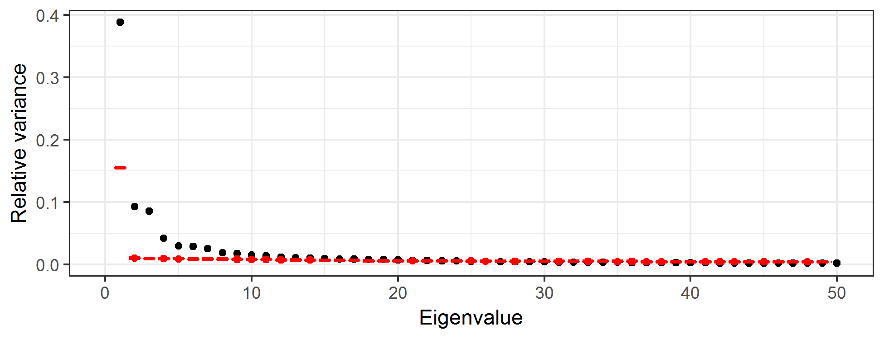
2.4.3.2 Some Technical Comments on Empirical Orthogonal Functions
The EOF decomposition is sometimes derived in a continuous-space context through a Karhunen–Loève expansion, with eigenvalues and eigenfunctions obtained through a solution of a Fredholm integral equation (Cressie & Wikle (2011), Section 5.3). This is relevant, as it shows why one should account for the area/support associated with each spatial observation when working in a discrete-space EOF environment. In particular, one should multiply the elements of the eigenvectors by the square root of the length, area, or volume of the spatial support associated with that spatial observation (e.g., Cohen & Jones (1969)). For example, consider spatial location \(\mathbf{s}_i\); for each of the \(k\) eigenvectors, one should multiply \(\psi_k(\mathbf{s}_i)\) by \(\sqrt{e}_i\), where \(e_i\) is the length, area, or volume associated with location \(\mathbf{s}_i\) (and we assume that not all of the \(\{e_i\}\) are identical). This modification to the eigenvectors \(\boldsymbol{\psi}_1,\ldots,\boldsymbol{\psi}_k\) must be done before calculating the PC time series.
Although most EOF analyses in the spatio-temporal context consider spatial EOFs and PC time series, one can certainly consider the analogous decomposition in which the EOFs are time-series bases and the projection of the data onto these bases is given by PC spatial fields. Implementation is straightforward – one either works with the temporal covariance matrix (averaging over spatial location) or considers the SVD of an \(m \times T\) (temporally detrended) data matrix. EOF time series are used as temporal basis functions in a spatio-temporal model in Lab 4.3.
It is also important to note that in cases where EOF analysis is used for dimension reduction (see Section 4.3), it is often necessary to either interpolate the EOFs in a sensible manner (e.g., Obled & Creutin (1986)) or “pre-interpolate” the data onto a finely gridded spatial domain.
Finally, there are many extensions to the basic EOF analysis presented here, including so-called complex EOFs, cyclostationary EOFs, multivariate EOFs, and extended EOFs. These all have particular utility depending on the type of data and the goal of the analysis. For example, complex EOFs are used for trying to identify propagating features that account for a significant amount of variation in the data. Cyclostationary EOFs are appropriate when there are strong periodicities in the data and spatial variation is expected to shift dramatically within this periodicity. Multivariate EOFs are considered when multivariate spatial data are observed at the same time points. Extended EOFs are useful for understanding spatial patterns associated with temporal lags. These methods are described in more detail in Cressie & Wikle (2011) (Section 5.3) and the references therein. In Lab 2.3 we will demonstrate the “classic” EOF analysis in R.
2.5 Spatio-Temporal Canonical Correlation Analysis
In multivariate statistics, canonical correlation analysis (CCA) seeks to create new variables that are linear combinations of two multivariate data sets (separately) such that the correlations between these new variables are maximized (e.g., Hotelling (1936)). Such methods can be extended to the case where the two data sets are indexed in space and time, typically where a spatial location corresponds to a “trait” in a multivariate set of “traits” (this terminology is borrowed from psychometrics). Time corresponds to the samples. (Note that just as with EOFs, one can reverse the roles of space and time in this setting as well.) A spatio-temporal CCA (ST-CCA) is given below where spatial location corresponds to the multivariate trait.
Assume that we have two data sets that have the same temporal domain of interest but potentially different spatial domains. In particular, consider the data sets given by the collection of spatial vectors \(\{\mathbf{Z}_{t_j} \equiv (Z(\mathbf{s}_1;t_j),\ldots, Z(\mathbf{s}_m;t_j))' : j=1,\ldots,T\}\), and \(\{\mathbf{X}_{t_j} \equiv (X(\mathbf{r}_1;t_j),\ldots,X(\mathbf{r}_n;t_j))' : j=1,\ldots, T\}\). Now, consider the two new variables that are linear combinations of \(\mathbf{Z}_{t_j}\) and \(\mathbf{X}_{t_j}\), respectively:
\[ a_k(t_j) = \sum_{i=1}^m \xi_{ik} \; Z(\mathbf{s}_i;t_j) = \boldsymbol{\xi}_k^\prime \mathbf{Z}_{t_j}, \tag{2.13}\]
\[ b_k(t_j) = \sum_{\ell=1}^n \psi_{\ell k} \; X(\mathbf{r}_\ell;t_j) = \boldsymbol{\psi}_k^\prime \mathbf{X}_{t_j}, \tag{2.14}\]
For suitable choices of weights (see below), the \(k\)th canonical correlation, for \(k=1,2,\ldots,\min\{n,m\}\), is then simply the correlation between \(a_k\) and \(b_k\),
\[ r_k \equiv \mathrm{corr}(a_k,b_k) = \frac{\mathrm{cov}(a_k,b_k)}{\sqrt{\mathrm{var}(a_k)}\sqrt{\mathrm{var}(b_k)}}, \]
which can also be written as
\[ r_k = \frac{\boldsymbol{\xi}_k^\prime \mathbf{C}^{(0)}_{z,x}\boldsymbol{\psi}_k}{(\boldsymbol{\xi}_k^\prime \mathbf{C}_z^{(0)} \boldsymbol{\xi}_k)^{1/2}(\boldsymbol{\psi}_k^\prime \mathbf{C}_x^{(0)} \boldsymbol{\psi}_k)^{1/2}}, \tag{2.15}\]
where the variance–covariance matrices \(\mathbf{C}^{(0)}_z\) and \(\mathbf{C}^{(0)}_x\) are of dimension \(m \times m\) and \(n \times n\), respectively, and the cross-covariance matrix \(\mathbf{C}^{(0)}_{z,x} \equiv\mathrm{cov}(\mathbf{Z},\mathbf{X})\) has dimension \(m \times n\). So the first pair of canonical variables corresponds to the weights \({\boldsymbol{\xi}}_1\) and \({\boldsymbol{\psi}}_1\) that maximize \(r_1\) in Equation 2.15. In addition, we standardize these weights such that the new canonical variables have unit variance. Given this first pair of canonical variables, we can then find a second pair, \({\boldsymbol{\xi}}_2\) and \(\boldsymbol{\psi}_2\), associated with \(\{a_2, b_2\}\) that are uncorrelated with \(\{a_1,b_1\}\), have unit variance, and maximize \(r_2\) in Equation 2.15. This procedure continues so that the \(k\)th set of canonical variables are the linear combinations, \(\{a_k,b_k\}\), that have unit variance, are uncorrelated with the previous \(k-1\) canonical variable pairs, and maximize \(r_k\) in Equation 2.15. A specific procedure for calculating ST-CCA is given in Note 2.3.
Because the weights given by \({\boldsymbol{\xi}}_k\) and \({\boldsymbol{\psi}}_k\) are indexed in space, they can be plotted as spatial maps, and the associated canonical variables can be plotted as time series. From an interpretation perspective, the time series of the first few canonical variables typically match up fairly closely (given they are optimized to maximize correlation), and the spatial patterns in the weights show the areas in space that are most responsible for the high correlations. Like EOFs, principal components, and other such approaches, one has to be careful with the interpretation of canonical variables beyond the first pair, given the restriction that CCA time series are uncorrelated. In addition, given that high canonical correlations within a canonical pair naturally result from this procedure, one has to be careful in evaluating the importance of that correlation. One way to do this is to randomly permute the spatial locations in the \({\mathbf{Z}}_{t_j}\) and \({\mathbf{X}}_{t_j}\) data vectors (separately) and recalculate the ST-CCA many times, thereby giving a permutation-based range of canonical correlations when there is no real structural relationship between the variables.
In addition to the consideration of two separate data sets, one can perform an ST-CCA between \({\mathbf{Z}}_{t_j}\) and, say, \({\mathbf{X}}_{t_j} \equiv {\mathbf{Z}}_{t_j-\tau}\), a \(\tau\)-lagged version of the \({\mathbf{Z}}_{t_j}\) data. This “one-field ST-CCA” is often useful for exploratory data analysis or for generating a forecast of a spatial field. Some binning of the spatio-temporal data into temporal bins lagged by \(\tau\) may be needed in practice.
Finally, in practice, because the covariance matrices required to implement ST-CCA are often fairly noisy (and even singular), depending on the sample size, we typically first project the data into a lower dimension using EOFs for computational stability (see Cressie & Wikle (2011), Section 5.6.1). This is the approach we take in Lab 2.3.
As an example of ST-CCA, we consider a one-field ST-CCA on the SST data set. In particular, we are interested in forecasting SST seven months in the future, so we let the data \(\mathbf{X}\) be the lag \(\tau = 7\) month SST data and the data \(\mathbf{Z}\) be the same SSTs with no lag. However, because \(T < \max\{m,n\}\) for these data, we first project the data onto the first 10 EOFs (which account for about 74% of the variance in the data). For the projected data, Figure 2.23 shows the first canonical variables (i.e., \(\{a_1(t_j),b_1(t_j): j=1,\ldots,T\}\)), plotted as individual time series and which correspond to a canonical correlation of \(r_1 = 0.843\). Figure 2.24 shows the corresponding spatial-weights maps for \({\boldsymbol{\xi}}_1\) and \({\boldsymbol{\psi}}_1\), respectively. In this example, it can be seen from the time-series plots that the series are quite highly correlated, and it can be shown that the large peaks correspond to known El Niño Southern Oscillation (ENSO) events. Similarly, the left panel of Figure 2.24 suggests a precursor pattern to the SST field in the right panel.
Note 2.3: Calculating ST-CCA
First, let \(k=1\) and, because \(\mathbf{C}_z^{(0)}\) and \(\mathbf{C}_x^{(0)}\) are positive-definite, note that we can write \(\mathbf{C}_z^{(0)} = (\mathbf{C}_z^{(0)})^{1/2}(\mathbf{C}_z^{(0)})^{1/2}\) and \(\mathbf{C}_x^{(0)} = (\mathbf{C}_x^{(0)})^{1/2}(\mathbf{C}_x^{(0)})^{1/2}\) (see Appendix A). Thus, from Equation 2.15, the square of the canonical correlation can be written as
\[ r_1^2 = \frac{[\widetilde{\boldsymbol{\xi}}_1^\prime (\mathbf{C}_z^{(0)})^{-1/2} \mathbf{C}_{z,x}^{(0)} (\mathbf{C}_x^{(0)})^{-1/2} \widetilde{\boldsymbol{\psi}}_1]^2}{(\widetilde{\boldsymbol{\xi}}_1^\prime \widetilde{\boldsymbol{\xi}}_1)(\widetilde{\boldsymbol{\psi}}_1^\prime \widetilde{\boldsymbol{\psi}}_1)}, \tag{2.16}\]
with \(\widetilde{\boldsymbol{\xi}}_1 \equiv (\mathbf{C}_z^{(0)})^{1/2} \boldsymbol{\xi}_1\) and \(\widetilde{\boldsymbol{\psi}}_1 \equiv (\mathbf{C}_x^{(0)})^{1/2} \boldsymbol{\psi}_1\). In the multivariate statistics literature (e.g., Johnson & Wichern (1992), p. 463), it is well known that \(r_1^2\) corresponds to the largest singular value of the singular value decomposition (SVD; see Appendix A) of
\[ (\mathbf{C}_z^{(0)})^{-1/2} \mathbf{C}_{z,x}^{(0)} (\mathbf{C}_x^{(0)})^{-1/2}, \tag{2.17}\]
where the normalized weight vectors \(\widetilde{\boldsymbol{\xi}}_1\) and \(\widetilde{\boldsymbol{\psi}}_1\) are the left and right singular vectors, respectively. Then we can obtain the unnormalized weights through \(\boldsymbol{\xi}_1 \equiv (\mathbf{C}_z^{(0)})^{-1/2} \widetilde{\boldsymbol{\xi}}_1\) and \(\boldsymbol{\psi}_1 \equiv (\mathbf{C}_x^{(0)})^{-1/2} \widetilde{\boldsymbol{\psi}}_1\), respectively. As mentioned above, these are the first ST-CCA pattern maps. The corresponding time series of ST-CCA canonical variables are then calculated directly from \(a_1(t_j) = \boldsymbol{\xi}_1^\prime \mathbf{Z}_{t_j}\) and \(b_1(t_j) = \boldsymbol{\psi}_1^\prime \mathbf{X}_{t_j}\), for \(j=1,\ldots,T\). More generally, \(\widetilde{\boldsymbol{\xi}}_k\) and \(\widetilde{\boldsymbol{\psi}}_k\) correspond to the left and right singular vectors associated with the \(k\)th singular value (\(r^2_k\)) in the SVD of Equation 2.17. Then the unnormalized spatial-weights maps and the canonical time series are obtained analogously to the \(k=1\) case.
In practice, to evaluate the SVD in Equation 2.17, we must first calculate the empirical covariance matrices \(\widehat{\mathbf{C}}_z^{(0)}\), \(\widehat{\mathbf{C}}_x^{(0)}\) using Equation 2.4, as well as the empirical cross-covariance matrix \(\widehat{\mathbf{C}}_{z,x}^{(0)}\) given by Equation 2.5. Finally, we consider the SVD of \((\widehat{\mathbf{C}}_z^{(0)})^{-1/2} \widehat{\mathbf{C}}_{z,x}^{(0)} (\widehat{\mathbf{C}}_x^{(0)})^{-1/2}\). As mentioned in the text, the empirical covariance matrices can be unstable (or singular) unless \(T \gg \max(n,m)\), and so it is customary to work in EOF space; that is, project the data for one or both variables onto a lower-dimensional space given by a relatively few EOFs before carrying out ST-CCA.

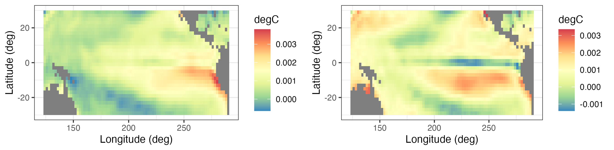
2.6 Chapter 2 Wrap-Up
There were three main goals in this chapter. First, we wanted to expose the reader to some basic ideas about data structures in R that are useful for working with spatio-temporal data. Next, we wanted to illustrate some useful ways to visualize spatio-temporal data, noting that it can be particularly challenging to visualize dynamical evolution of spatial fields either without collapsing the spatial component onto one spatial dimension (e.g., as with the Hovmöller plots) or through animation. Finally, we wanted to describe some standard ways to explore spatio-temporal data in preparation for developing models in Chapter 3. In particular, we discussed the exploration of the first moments (means) in space or time, and the second-order structures (covariances) either jointly in space and time, or averaged over one of the dimensions (usually the time dimension) to give covariance and cross-covariance matrices. Stepping up the technical level, we considered eigenvector approaches to explore the structure and potentially reduce the dimensionality of the spatio-temporal data. Specifically, we considered EOFs and ST-CCA. Of these, the EOFs are the most ubiquitous in the literature. Even if the technical details were a bit elaborate, the end result is a powerful and interpretable visualization and exploration of spatio-temporal variability.
You now have the survival skills to start building statistical models for spatio-temporal data, with the goal of spatial prediction, parameter inference, or temporal forecasting. In subsequent chapters, spatio-temporal statistical models will be discussed from an introductory perspective in Chapter 3, from a descriptive perspective in Chapter 4, and from a dynamic perspective in Chapter 5.
Lab 2.1: Data Wrangling
Spatio-temporal modeling and prediction generally involve substantial amounts of data that are available to the user in a variety of forms, but more often than not as tables in CSV files or text files. A considerable amount of time is usually spent in loading the data and pre-processing them in order to put them into a form that is suitable for analysis. Fortunately, there are several packages in R that help the user achieve these goals quickly; here we focus on the packages dplyr and tidyr, which contain functions particularly suited for the data manipulation techniques that are required. We first load the required packages, as well as STRbook (visit https://spacetimewithr.org for instructions on how to install STRbook).
As a running example, we shall consider a data set from the National Oceanic and Atmospheric Administration (NOAA) that was provided to us as text in data tables available with the package STRbook. There are six data tables:
Stationinfo.dat. This table contains 328 rows (one for each station) and three columns (station ID, latitude coordinate, and longitude coordinate) containing information on the stations’ locations.Times_1990.dat. This table contains 1461 rows (one for each day between 01 January 1990 and 30 December 1993) and four columns (Julian date, year, month, day) containing the data time stamps.Tmax_1990.dat. This table contains 1461 rows (one for each time point) and 328 columns (one for each station location) containing all maximum temperature data with missing values coded as \(-9999\).Tmin_1990.dat. Same asTmax_1990.datbut containing minimum temperature data.TDP_1990.dat. Same asTmax_1990.datbut containing temperature dew point data with missing values coded as \(-999.90001\).Precip_1990.dat. Same asTmax_1990.datbut containing precipitation data with missing values coded as \(-99.989998\).
The first task is to reconcile all these data into one object. Before seeing how to use the spatio-temporal data classes to do this, we first consider the rather simpler task of reconciling them into a standard R data frame in long format.
Working with Spatio-Temporal Data in Long Format
The station locations, time stamps and maximum temperature data can be loaded into R from STRbook as follows.
locs <- read.table(system.file("extdata", "Stationinfo.dat",
package = "STRbook"),
col.names = c("id", "lat", "lon"))
Times <- read.table(system.file("extdata", "Times_1990.dat",
package = "STRbook"),
col.names = c("julian", "year", "month", "day"))
Tmax <- read.table(system.file("extdata", "Tmax_1990.dat",
package = "STRbook"))In this case, system.file and its arguments are used to locate the data within the package STRbook, while read.table is the most important function used in R for reading data input from text files. By default, read.table assumes that data items are separated by a blank space, but this can be changed using the argument sep. Other important data input functions worth looking up include read.csv for comma-separated value files, and read.delim.
Above we have added the column names to the data locs and Times since these were not available with the original text tables. Since we did not assign column names to Tmax, the column names are the default ones assigned by read.table, that is, V1, V2, \(\dots\), V328. As these do not relate to the station ID in any way, we rename these columns as appropriate using the data in locs.
names(Tmax) <- locs$idThe other data can be loaded in a similar way to Tmax; we denote the resulting variables as Tmin, TDP, and Precip, respectively. One can, and should, use the functions head and tail to check that the loaded data are sensible.
Consider now the maximum-temperature data in the NOAA data set. Since each row in Tmax is associated with a time point, we can attach it columnwise to the data frame Times using cbind.
Tmax <- cbind(Times, Tmax)
head(names(Tmax), 10) [1] "julian" "year" "month" "day" "3804" "3809" "3810" "3811"
[9] "3812" "3813" Now Tmax contains the time information in the first four columns and temperature data in the other columns. To put Tmax into long format we need to identify a pair. In our case, the data are in space-wide format where the are the station IDs and the are the maximum temperatures (which we store in a field named z). The function we use to put the data frame into long format is gather. This function takes the data as first argument, the key–value pair, and then the next arguments are the names of any columns to exclude as values (in this case those relating to the time stamp).
Tmax_long <- gather(Tmax, id, z, -julian, -year, -month, -day)
head(Tmax_long) julian year month day id z
1 726834 1990 1 1 3804 35
2 726835 1990 1 2 3804 42
3 726836 1990 1 3 3804 49
4 726837 1990 1 4 3804 59
5 726838 1990 1 5 3804 41
6 726839 1990 1 6 3804 45Note how gather has helped us achieve our goal: we now have a single row per measurement and multiple rows may be associated with the same time point. As is, the column id is of class character since it was extracted from the column names. Since the station ID is an integer it is more natural to ensure the field is of class integer.
Tmax_long$id <- as.integer(Tmax_long$id)There is little use to keep missing data (coded as \(-9999\) in our case) when the data are in long format. To filter out these data we can use the function filter. Frequently it is better to use an criterion (e.g., less than) when filtering in this way rather than an criterion (is equal to) due to truncation error when storing data. This is what we do below, and filter out data with values less than \(-9998\) rather than data with values equal to \(-9999\). This is particularly important when processing the other variables, such as precipitation, where the missing value is \(-99.989998\).
nrow(Tmax_long)[1] 479208Tmax_long <- filter(Tmax_long, !(z <= -9998))
nrow(Tmax_long)[1] 196253Note how the number of rows in our data set (returned from the function nrow) has now decreased by more than half. One may also use the R function subset; however, filter tends to be faster for large data sets. Both subset and filter take a logical expression as instruction on how to filter out unwanted rows. As with gather, the column names in the logical expression do not appear as strings. In R this method of providing arguments is known as , and we shall see several instances of it in the course of the Labs.
Now assume we wish to include minimum temperature and the other variables inside this data frame too. The first thing we need to do is first make sure every measurement z is attributed to a process. In our case, we need to add a column, say proc, indicating what process the measurement relates to. There are a few ways in which to add a column to a data frame; here we shall introduce the function mutate, which will facilitate operations in the following Labs.
Tmax_long <- mutate(Tmax_long, proc = "Tmax")
head(Tmax_long) julian year month day id z proc
1 726834 1990 1 1 3804 35 Tmax
2 726835 1990 1 2 3804 42 Tmax
3 726836 1990 1 3 3804 49 Tmax
4 726837 1990 1 4 3804 59 Tmax
5 726838 1990 1 5 3804 41 Tmax
6 726839 1990 1 6 3804 45 TmaxNow repeat the same procedure with the other variables to obtain data frames Tmin_long, TDP_long, and Precip_long (remember the different codings for the missing values!). To save time, the resulting data frames can also be loaded directly from STRbook as follows.
data(Tmin_long, package = "STRbook")
data(TDP_long, package = "STRbook")
data(Precip_long, package = "STRbook")We can now construct our final data frame in long format by simply concatenating all these (rowwise) together using the function rbind.
NOAA_df_1990 <- rbind(Tmax_long, Tmin_long, TDP_long, Precip_long)There are many advantages of having data in long form. For example, it makes grouping and summarizing particularly easy. Let us say we want to find the mean value for each variable in each year. We do this using the functions group_by and summarise. The function group_by creates a , while summarise does an operation .
summ <- group_by(NOAA_df_1990, year, proc) %>% # groupings
summarise(mean_proc = mean(z)) # operation`summarise()` has grouped output by 'year'. You can override using the
`.groups` argument.Alternatively, we may wish to find out the number of days on which it did not rain at each station in June of every year. We can first filter out the other variables and then use summarise.
NOAA_precip <- filter(NOAA_df_1990, proc == "Precip" & month == 6)
summ <- group_by(NOAA_precip, year, id) %>%
summarise(days_no_precip = sum(z == 0))`summarise()` has grouped output by 'year'. You can override using the
`.groups` argument.head(summ)# A tibble: 6 × 3
# Groups: year [1]
year id days_no_precip
<int> <int> <int>
1 1990 3804 19
2 1990 3810 26
3 1990 3811 21
4 1990 3812 24
5 1990 3813 25
6 1990 3816 23The median number of days with no recorded precipitation was
median(summ$days_no_precip)[1] 20In the R~code above, we have used the operator $>$, known as the operator. This operator has its own nuances and should be used with care, but we find it provides a clear desciption of the processing pipeline a data set is passed through. We shall always use this operator as x $>$ f(y), which is shorthand for f(x,y). For example, the June summaries above can be found equivalently using the commands
grps <- group_by(NOAA_precip, year, id)
summ <- summarise(grps, days_no_precip = sum(z == 0))There are other useful commands in dplyr that we use in other Labs. First, the function arrange sorts by a column. For example, NOAA_df_1990 is sorted first by station ID, and then by time (Julian date). The following code sorts the data first by time and then by station ID.
NOAA_df_sorted <- arrange(NOAA_df_1990, julian, id)Calling head``(NOAA_df_sorted) reveals that no measurements on temperature dew point are available for the first few days of the data set.
Another useful function is select, which can be used to select or discard columns. For example, in the following, df1 selects only the Julian date and the measurement while df2 contains all columns except the Julian date.
df1 <- select(NOAA_df_1990, julian, z)
df2 <- select(NOAA_df_1990, -julian)At present, our long data frame contains no spatial information attached to it. However, for each station ID we have an associated coordinate in the data frame locs. We can merge locs to NOAA_df_1990 using the function left_join; this is considerably faster than the function merge. With left_join we need to supply the column field name by which we are merging. In our case, the field common to both data sets is "id".
NOAA_df_1990 <- left_join(NOAA_df_1990, locs, by = "id")Finally, it may be the case that one wishes to revert from long format to either space-wide or time-wide format. The reverse function of gather is spread. This also works by identifying the key–value pair in the data frame; the values are then “widened” into a table while the keys are used to label the columns. For example, the code below constructs a space-wide data frame of maximum temperatures, with each row denoting a different date and each column containing data z from a specific station id.
Tmax_long_sel <- select(Tmax_long, julian, id, z)
Tmax_wide <- spread(Tmax_long_sel, id, z)
dim(Tmax_wide)[1] 1461 138The first column is the Julian date. Should one wish to construct a standard matrix containing these data, then one can simply drop this column and convert as follows.
M <- select(Tmax_wide, -julian) %>% as.matrix()Working with Spatio-Temporal Data Classes
Next, we convert the data into objects of class STIDF and STFDF; in these class names “DF” is short for “data frame,” which indicates that in addition to the spatio-temporal locations (which only need STI or STF objects), the objects will also contain data. These classes are defined in the package spacetime. Since sometimes we construct spatio-temporal objects using spatial objects we also need to load the package sp. For details on these classes see Pebesma (2012).
library("sp")
library("spacetime")Constructing an STIDF Object
The spatio-temporal object for irregular data, STIDF, can be constructed using two functions: stConstruct and STIDF. Let us focus on the maximum temperature in Tmax_long. The only thing we need to do before we call stConstruct is to define a formal time stamp from the year,month,day fields. First, we construct a field with the date in year–month–day format using the function paste, which concatenates strings together. Instead of typing NOAA_df_1990$year, NOAA_df_1990$month and NOAA_df_1990$day we embed the paste function within the function with to reduce code length.
NOAA_df_1990$date <- with(NOAA_df_1990,
paste(year, month, day, sep = "-"))
head(NOAA_df_1990$date, 4) # show first four elements[1] "1990-1-1" "1990-1-2" "1990-1-3" "1990-1-4"The field date is of type character. This field can now be converted into a Date object using as.Date.
NOAA_df_1990$date <- as.Date(NOAA_df_1990$date)
class(NOAA_df_1990$date)[1] "Date"Now we have everything in place to construct the spatio-temporal object of class STIDF for maximum temperature. The easiest way to do this is using stConstruct, in which we provide the data frame in long format and indicate which are the spatial and temporal coordinates. This is the bare minimum required for constructing a spatio-temporal data set.
Tmax_long2 <- filter(NOAA_df_1990, proc == "Tmax")
STObj <- stConstruct(x = Tmax_long2, # data set
space = c("lon", "lat"), # spatial fields
time = "date") # time field
class(STObj)[1] "STIDF"
attr(,"package")
[1] "spacetime" The function class can be used to confirm we have successfully generated an object of class STIDF. There are several other options that can be used with stConstruct. For example, one can set the coordinate reference system or specify whether the time field indicates an instance or an interval. Type help``(stConstruct) into the R console for more details.
The function STIDF is slightly different from stConstruct as it requires one to also specify the spatial part as an object of class Spatial from the package sp. In our case, the spatial component is simply an object containing irregularly spaced data, which in the package sp is a SpatialPoints object. A SpatialPoints object may be constructed using the function SpatialPoints and by supplying the coordinates as arguments. As with stConstruct, several other arguments can also be supplied to SpatialPoints; see the help file of SpatialPoints for more details.
spat_part <- SpatialPoints(coords = Tmax_long2[, c("lon", "lat")])
temp_part <- Tmax_long2$date
STObj2 <- STIDF(sp = spat_part,
time = temp_part,
data = select(Tmax_long2, -date, -lon, -lat))
class(STObj2)[1] "STIDF"
attr(,"package")
[1] "spacetime"Constructing an STFDF Object
A similar approach can be used to construct an STFDF object instead of an STIDF object. When the spatial points are fixed in time, we only need to provide as many spatial co-ord-in-ates as there are spatial points, in this case those of the station locations. We also need to provide the regular time stamps, that is, one for each day between 01 January 1990 and 30 December 1993. Finally, the data can be provided both in space-wide or time-wide format with stConstruct, and in long format with STFDF. Here we show how to use STFDF.
The spatial and temporal parts can be obtained from the original data as follows.
spat_part <- SpatialPoints(coords = locs[, c("lon", "lat")])
temp_part <- with(Times,
paste(year, month, day, sep = "-"))
temp_part <- as.Date(temp_part)The data need to be provided in long format, but now they must contain all the missing values too since a data point must be provided for every spatial and temporal combination. To get the data into long format we use gather.
Tmax_long3 <- gather(Tmax, id, z, -julian, -year, -month, -day)It is very important that the data frame in long format supplied to STFDF has the spatial index moving faster than the temporal index, and that the order of the spatial index is the same as that of the spatial component supplied.
Tmax_long3$id <- as.integer(Tmax_long3$id)
Tmax_long3 <- arrange(Tmax_long3,julian,id)Confirming that the spatial ordering in Tmax_long3 is the correct one can be done as follows.
all(unique(Tmax_long3$id) == locs$id)[1] TRUEWe are now ready to construct the STFDF.
STObj3 <- STFDF(sp = spat_part,
time = temp_part,
data = Tmax_long3)
class(STObj3)[1] "STFDF"
attr(,"package")
[1] "spacetime"Since we will be using STObj3 often in the Labs we further equip it with a coordinate reference system (see Bivand et al. (2013) for details on these reference systems),
proj4string(STObj3) <- CRS("+proj=longlat +ellps=WGS84")and replace the missing values (currently coded as \(-9999\)) with NAs.
STObj3$z[STObj3$z == -9999] <- NAFor ease of access, this object is saved as a data file in STRbook and can be loaded using the command data("STObj3", package = "STRbook").
Lab 2.2: Visualization
In this Lab we shall visualize maximum temperature data in the NOAA data set. Specifically, we consider the maximum recorded temperature between May 1993 and September 1993 (inclusive). The packages we need are animation, dplyr, ggplot2, gstat, maps, and STRbook.
library("animation")
library("dplyr")
library("ggplot2")
library("gstat")
library("maps")
library("STRbook")In order to ensure consistency of results and visualizations we fix the seed to 1.
set.seed(1)We now load the data set and take a subset of it using the function filter.
data("NOAA_df_1990", package = "STRbook")
Tmax <- filter(NOAA_df_1990, # subset the data
proc == "Tmax" & # only max temperature
month %in% 5:9 & # May to September
year == 1993) # year of 1993The data frame we shall work with is hence denoted by Tmax. The first six records in Tmax are:
Tmax %>% select(lon, lat, date, julian, z) %>% head() lon lat date julian z
1 -81.43333 39.35 1993-05-01 728050 82
2 -81.43333 39.35 1993-05-02 728051 84
3 -81.43333 39.35 1993-05-03 728052 79
4 -81.43333 39.35 1993-05-04 728053 72
5 -81.43333 39.35 1993-05-05 728054 73
6 -81.43333 39.35 1993-05-06 728055 78The first record has a Julian date of 728050, corresponding to 01 May 1993. To ease the following operations, we create a new variable t that is equal to 1 when julian == 728050 and increases by 1 for each day in the record.
Tmax$t <- Tmax$julian - 728049 # create a new time variableThe first task faced by the spatio-temporal modeler is data visualization. This is an important preliminary task that needs to be carried out prior to the exploratory-data-analysis stage and the modeling stages. Throughout, we shall make extensive use of the grammar of graphics package ggplot2, which is a convenient way to plot and visualize data and results in R. The book by Wickham (2016) provides a comprehensive introduction to ggplot2.
Spatial Plots
Visualization techniques vary with the data being analyzed. The NOAA data are collected at stations that are fixed in space; therefore, initial plots should give the modeler an idea of the overall spatial variation of the observed data. If there are many time points, usually only a selection of time points are chosen for visualization. In this case we choose three time points.
Tmax_1 <- subset(Tmax, t %in% c(1, 15, 30)) # extract dataThe variable Tmax_1 contains the data associated with the first, fifteenth, and thirtieth day in Tmax. We now plot this data subset using ggplot2. Note that the function col_scale, below, is simply a wrapper for the ggplot2 function scale_colour_distiller, and is provided with STRbook.
NOAA_plot <- ggplot(Tmax_1) + # plot points
geom_point(aes(x = lon,y = lat, # lon and lat
colour = z), # attribute color
size = 2) + # make all points larger
col_scale(name = "degF") + # attach color scale
xlab("Longitude (deg)") + # x-axis label
ylab("Latitude (deg)") + # y-axis label
geom_path(data = map_data("state"), # add US states map
aes(x = long, y = lat, group = group)) +
facet_grid(~date) + # facet by time
coord_fixed(xlim = c(-105, -75),
ylim = c(25, 50)) + # zoom in
theme_bw() # B&W themeNOAA_plot is a plot of the spatial locations of the stations. The function aes (short for aesthetics) for geom_point identifies which field in the data frame Tmax_1 is the \(x\)-coordinate and which is the \(y\)-coordinate. ggplot2 also allows one to attribute color (and size, if desired) to other fields in a similar fashion. Use the command print(NOAA_plot) to display the plot. The command print(NOAA_plot) generates the figure shown in Figure 2.1. As can be seen, the stations are approximately regularly spaced within the domain.
When working with geographic data, it is also good practice to put the spatial locations of the data into perspective, by plotting country or state boundaries together with the data locations. Above, the US state boundaries are obtained from the maps package through the command map_data("state"). The boundaries are then overlayed on the plot using geom_path, which simply joins the points and draws the resulting path with x against y. Projections can be applied by adding another layer to the ggplot2 object using coord_map. For example adding + coord_map(projection = "sinusoidal") will plot using a sinusoidal projection. One can also plot in three dimensions by using projection = "ortho".
In this example we have used ggplot2 to plot point-referenced data. Plots of regular lattice data, such as those shown in Figure 2.2, are generated similarly by using geom_tile instead. Plots of irregular lattice data are generated using geom_polygon. As an example of the latter, consider the BEA income data set. These data can be loaded from STRbook as follows.
data("BEA", package = "STRbook")
head(BEA %>% select(-Description), 3) NAME10 X1970 X1980 X1990
6 Adair, MO 2723 7399 12755
9 Andrew, MO 3577 7937 15059
12 Atchison, MO 3770 5743 14748From the first three records, we can see that the data set contains the personal income, in dollars, by county and by year for the years 1970, 1980 and 1990. These data need to be merged with Missouri county data which contain geospatial information. These county data, which are also available in STRbook, were originally processed from a shapefile that was freely available online at http://msdis-archive.missouri.edu/archive/metadata_gos/MO_2010_TIGER_Census_County_Boundaries.xml.
data("MOcounties", package = "STRbook")
head(MOcounties %>% select(long, lat, NAME10), 3) long lat NAME10
1 627911.9 4473554 Clark, MO
2 627921.4 4473559 Clark, MO
3 627923.0 4473560 Clark, MOThe data set contains the boundary points for the counties, amongst several other variables which we do not explore here. For example, to plot the boundary of the first county one can simply type:
County1 <- filter(MOcounties, NAME10 == "Clark, MO")
plot(County1$long, County1$lat)To add the BEA income data to the county data containing geospatial information we use left_join.
MOcounties <- left_join(MOcounties, BEA, by = "NAME10")Now it is just a matter of calling ggplot with geom_polygon to display the BEA income data as spatial polygons. We also use geom_path to draw the county boundaries. Below we show the code for 1970; similar code would be needed for 1980 and 1990. Note the use of the group argument to identify which points correspond to which county. The resulting plots are shown in Figure 2.4.
g1 <- ggplot(MOcounties) +
geom_polygon(aes(x = long, y = lat, # county boundary
group = NAME10, # county group
fill = log(X1970))) + # log of income
geom_path(aes(x = long, y = lat, # county boundary
group = NAME10)) + # county group
fill_scale(limits = c(7.5,10.2),
name = "log($)") +
coord_fixed() + ggtitle("1970") + # annotations
xlab("x (m)") + ylab("y (m)") + theme_bw()Type print(g1) in the R console to display the plot.
Time-Series Plots
Next, we look at the time series associated with the maximum temperature data in the NOAA data set. One can plot the time series at all 139 weather stations (and this is recommended); here we look at the time series at a set of stations selected at random. We first obtain the set of unique station identifiers, choose 10 at random from these, and extract the data associated with these 10 stations from the data set.
UIDs <- unique(Tmax$id) # extract IDs
UIDs_sub <- sample(UIDs, 10) # sample 10 IDs
Tmax_sub <- filter(Tmax, id %in% UIDs_sub) # subset dataTo visualize the time series at these stations, we use facets. When given a long data frame, one can first subdivide the data frame into groups and generate a plot for each group. The following code displays the time series at each station. The command we use is facet_wrap, which automatically adjusts the number of rows and columns in which to display the facets. The command facet_grid instead uses columns for one grouping variable and rows for a second grouping variable, if specified.
TmaxTS <- ggplot(Tmax_sub) +
geom_line(aes(x = t, y = z)) + # line plot of z against t
facet_wrap(~id, ncol = 5) + # facet by station
xlab("Day number (days)") + # x label
ylab("Tmax (degF)") + # y label
theme_bw() + # BW theme
theme(panel.spacing = unit(1, "lines")) # facet spacingThe argument ~id supplied to facet_wrap is a formula in R. In this case, the formula is used to denote the groups by which we are faceting. The syntax x~y can be used to facet by two variables. The command print(TmaxTS) produces the required figure.
Hovmöller Plots
A Hovmöller plot is a two-dimensional space-time visualization, where space is collapsed (projected or averaged) onto one dimension; the second dimension then denotes time. A Hovmöller plot can be generated relatively easily if the data are on a space-time grid, but unfortunately this is rarely the case! This is where data-wrangling techniques such as those explored in Lab 2.1 come in handy.
Consider the latitudinal Hovmöller plot. The first step is to generate a regular grid of, say, 25 spatial points and 100 temporal points using the function expand.grid, with limits set to the latitudinal and temporal limits available in the data set.
lim_lat <- range(Tmax$lat) # latitude range
lim_t <- range(Tmax$t) # time range
lat_axis <- seq(lim_lat[1], # latitude axis
lim_lat[2],
length=25)
t_axis <- seq(lim_t[1], # time axis
lim_t[2],
length=100)
lat_t_grid <- expand.grid(lat = lat_axis,
t = t_axis)We next need to associate each station’s latitudinal coordinate with the closest one on the grid. This can be done by finding the distance from the station’s latitudinal coordinate to each point of the grid, finding which gridpoint is the closest, and allocating that to it. We store the gridded data in Tmax_grid.
Tmax_grid <- Tmax
dists <- abs(outer(Tmax$lat, lat_axis, "-"))
Tmax_grid$lat <- lat_axis[apply(dists, 1, which.min)]Now that we have associated each station with a latitudinal coordinate, all that is left is to group by latitude and time, and then we average all station values falling in the latitude–time bands.
Tmax_lat_Hov <- group_by(Tmax_grid, lat, t) %>%
summarise(z = mean(z))`summarise()` has grouped output by 'lat'. You can override using the `.groups`
argument.In this case, every latitude–time band contains at least one data point, so that the Hovmöller plot contains no missing points on the established grid. This may not always be the case, and simple interpolation methods, such as interp from the akima package, can be used to fill out grid cells with no data.
Plotting gridded data is facilitated using the ggplot2 function geom_tile. The function geom_tile is similar to geom_point, except that it assumes regularly spaced data and automatically uses rectangular patches in the plot. Since rectangular patches are “filled,” we use the STRbook function fill_scale instead of col_scale, which takes the legend title in the argument name.
Hovmoller_lat <- ggplot(Tmax_lat_Hov) + # take data
geom_tile(aes(x = lat, y = t, fill = z)) + # plot
fill_scale(name = "degF") + # add color scale
scale_y_reverse() + # rev y scale
ylab("Day number (days)") + # add y label
xlab("Latitude (degrees)") + # add x label
theme_bw() # change themeThe function scale_y_reverse ensures that time increases from top to bottom, as is typical in Hovmöller plots. We can generate a longitude-based Hovmöller plot in the same way. Type print(Hovmoller_lat) in the R console to display the plot. The resulting Hovmöller plots are shown in Figure 2.11.
Animations
To generate an animation in R, one can use the package animation. First, we define a function that plots a spatial map of the maximum temperature as a function of time:
Tmax_t <- function(tau) {
Tmax_sub <- filter(Tmax, t == tau) # subset data
ggplot(Tmax_sub) +
geom_point(aes(x = lon, y = lat, colour = z), # plot
size = 4) + # pt. size
col_scale(name = "z", limits = c(40, 110)) +
theme_bw() # B&W theme
}The function above takes a day number tau, filters the data frame according to the day number, and then plots the maximum temperature at the stations as a spatial map.
Next, we construct a function that plots the data for every day in the data set. The function that generates the animation within an HTML webpage is saveHTML. This takes the function that plots the sequence of images and embeds them in a webpage (by default named index.html) using JavaScript. The function saveHTML takes many arguments; type the command
help(saveHTML)in the R console for more details.
gen_anim <- function() {
for(t in lim_t[1]:lim_t[2]){ # for each time point
plot(Tmax_t(t)) # plot data at this time point
}
}
ani.options(interval = 0.2) # 0.2s interval between frames
saveHTML(gen_anim(), # run the main function
autoplay = FALSE, # do not play on load
loop = FALSE, # do not loop
verbose = FALSE, # no verbose
outdir = ".", # save to current dir
single.opts = "'controls': ['first', 'previous',
'play', 'next', 'last',
'loop', 'speed'],
'delayMin': 0",
htmlfile = "NOAA_anim.html") # save filenameTo view the animation, load NOAA_anim.html from your working directory. The animation reveals dynamics within the spatio-temporal data that are not apparent using other visualization methods. For example, the maximum temperature clearly drifts from west to east at several points during the animation. This suggests that a dynamic spatio-temporal model that can capture this drift could provide a good fit to these data.
Lab 2.3: Exploratory Data Analysis
In this Lab we carry out exploratory data analysis (EDA), which typically requires visualization techniques similar to those utilized in Lab 2.2. There are several ways in which to carry out EDA with spatio-temporal data; in this Lab we consider the construction and visualization of the empirical means and covariances, the use of empirical orthogonal functions and their associated principal component time series, semivariogram analysis, and spatio-temporal canonical correlation analysis.
For the first part of the Lab, as in Lab 2.2, we shall consider the daily maximum temperatures in the NOAA data set between May 1993 and September 1993 (inclusive). The packages we need are CCA, dplyr, ggplot2, gstat, sp, spacetime, STRbook and tidyr.
library("CCA")
library("dplyr")
library("ggplot2")
library("gstat")
library("sp")
library("spacetime")
library("STRbook")
library("tidyr")In order to ensure consistency of results and visualizations, we fix the seed to 1.
set.seed(1)We now load the NOAA data set using the data command. To keep the data size manageable, we take a subset of it corresponding to the maximum daily temperatures in the months May–September 1993. As in Lab 2.2 we also add a new variable t which starts at 1 at the beginning of the data set and increases by 1 each day.
data("NOAA_df_1990", package = "STRbook")
Tmax <- filter(NOAA_df_1990, # subset the data
proc == "Tmax" & # only max temperature
month %in% 5:9 & # May to September
year == 1993) # year of 1993
Tmax$t <- Tmax$julian - 728049 # create a new time variableEmpirical Spatial Means
The empirical spatial mean of our data is given by Equation 2.1. The empirical spatial mean is a spatial quantity that can be stored in a new data frame that contains the spatial locations and the respective average maximum temperature at each location. These, and other data manipulations to follow, can be carried out easily using the tools we learned in Lab 2.1. We group by longitude and latitude, and then we compute the average maximum temperature at each of the separate longitude–latitude coordinates.
spat_av <- group_by(Tmax, lat, lon) %>% # group by lon-lat
summarise(mu_emp = mean(z)) # mean for each lon-latWe can now plot the average maximum temperature per station and see how this varies according to longitude and latitude. The following plots are shown in Figure 2.14.
lat_means <- ggplot(spat_av) +
geom_point(aes(lat, mu_emp)) +
xlab("Latitude (deg)") +
ylab("Maximum temperature (degF)") + theme_bw()
lon_means <- ggplot(spat_av) +
geom_point(aes(lon, mu_emp)) +
xlab("Longitude (deg)") +
ylab("Maximum temperature (degF)") + theme_bw()Empirical Temporal Means
We now generate the plot of Figure 2.15. The empirical temporal mean can be computed easily using the tools we learned in Lab 2.1: first, group the data by time; and second, summarize using the summarise function.
Tmax_av <- group_by(Tmax, date) %>%
summarise(meanTmax = mean(z))The variable Tmax_av is a data frame containing the average maximum temperature on each day (averaged across all the stations). This can be visualized easily, together with the original raw data, using ggplot2.
gTmaxav <-
ggplot() +
geom_line(data = Tmax, aes(x = date, y = z, group = id),
colour = "blue", alpha = 0.04) +
geom_line(data = Tmax_av, aes(x = date, y = meanTmax)) +
xlab("Month") + ylab("Maximum temperature (degF)") +
theme_bw()Empirical Covariances
Before obtaining the empirical covariances, it is important that all trends are removed (not just the intercept). One simple way to do this is to first fit a linear model (that has spatial and/or temporal covariates) to the data. Then plot the empirical covariances of the detrended data (i.e., the residuals). Linear-model fitting proceeds with use of the lm function in R. The residuals from lm can then be incorporated into the original data frame Tmax.
In the plots of Figure 2.9 we observed a quadratic tendency of temperature over the chosen time span. Therefore, in what follows, we consider time and time squared as covariates. Note the use of the function I. This is required for R to interpret the power sign ^ as an arithmetic operator instead of a formula operator.
lm1 <- lm(z ~ lat + t + I(t^2), data = Tmax) # fit a linear model
Tmax$residuals <- residuals(lm1) # store the residualsWe also need to consider the spatial locations of the stations, which we extract from Tmax used above.
spat_df <- filter(Tmax, t == 1) %>% # lon/lat coords of stations
dplyr::select(lon, lat) %>% # select lon/lat only
arrange(lon, lat) # sort ascending by lon/lat
m <- nrow(spat_av) # number of stationsThe most straightforward way to compute the empirical covariance matrix shown in Equation 2.4 is using the cov function in R. When there are missing data, the usual way forward is to drop all records that are not complete (provided there are not too many of these). Specifically, if any of the elements in \(\mathbf{Z}_{t_j}\) or \(\mathbf{Z}_{t_j - \tau}\) are missing, the associated term in the summation of Equation 2.4 is ignored altogether. The function cov implements this when the argument use = 'complete.obs' is supplied. If there are too many records that are incomplete, imputation, or the consideration of only subsets of stations, might be required.
In order to compute the empirical covariance matrices, we first need to put the data into space-wide format using spread.
X <- dplyr::select(Tmax, lon, lat, residuals, t) %>% # select columns
spread(t, residuals) %>% # make time-wide
dplyr::select(-lon, -lat) %>% # drop coord info
t() # make space-wideNow it is simply a matter of calling cov(X, use = 'complete.obs') for computing the lag-0 empirical covariance matrix. For the lag-1 empirical covariance matrix, we compute the covariance between the residuals from X excluding the first time point and X excluding the last time point.
Lag0_cov <- cov(X, use = 'complete.obs')
Lag1_cov <- cov(X[-1, ], X[-nrow(X),], use = 'complete.obs')In practice, it is very hard to gain any intuition from these matrices, since points in a two-dimensional space do not have any specific ordering. One can, for example, order the stations by longitude and then plot the permuted spatial covariance matrix, but this works best when the domain of interest is rectangular with a longitude span that is much larger than the latitude span. In our case, with a roughly square domain, a workaround is to split the domain into either latitudinal or longitudinal strips, and then plot the spatial covariance matrix associated with each strip. In the following, we split the domain into four longitudinal strips (similar code can be used to generate latitudinal strips).
spat_df$n <- 1:nrow(spat_df) # assign an index to each station
lim_lon <- range(spat_df$lon) # range of lon coordinates
lon_strips <- seq(lim_lon[1], # create 4 long. strip boundaries
lim_lon[2],
length = 5)
spat_df$lon_strip <- cut(spat_df$lon, # bin the lon into
lon_strips, # their respective bins
labels = FALSE, # don't assign labels
include.lowest = TRUE) # include edgesThe first six records of spat_df are:
head(spat_df) # print the first 6 records of spat_df lon lat n lon_strip
1 -99.96667 37.76667 1 1
2 -99.76667 36.30000 2 1
3 -99.68333 32.43333 3 1
4 -99.05000 35.00000 4 1
5 -98.81667 38.86666 5 1
6 -98.51667 33.98333 6 1Now that we know in which strip each station falls, we can subset the station data frame by strip and then sort the subsetted data frame by latitude. In STRbook we provide a function plot_cov_strips that takes an empirical covariance matrix C and a data frame in the same format as spat_df, and then plots the covariance matrix associated with each longitudinal strip. Plotting requires the package fields. We can plot the resulting lag-0 and lag-1 covariance matrices using the following code.
plot_cov_strips(Lag0_cov, spat_df) # plot the lag-0 matrices
plot_cov_strips(Lag1_cov, spat_df) # plot the lag-1 matricesAs expected (see Figure 2.16), the empirical spatial covariance matrices reveal the presence of spatial correlation in the residuals. The four lag-0 plots seem to be qualitatively similar, suggesting that there is no strong dependence on longitude. However, there is a dependence on latitude, and the spatial covariance appears to decrease with decreasing latitude. This dependence is a type of spatial non-stationarity, and such plots can be used to assess whether non-stationary spatio-temporal models are required or not.
Similar code can be used to generate spatial correlation (instead of covariance) image plots.
Semivariogram Analysis
From now on, in order to simplify computations, we will use a subset of the data containing only observations in July. Computing the empirical semivariogram is much faster when using objects of class STFDF rather than STIDF since the regular space-time structure can be exploited. We hence take STObj3 computed in Lab 2.1 (load using data(STObj3)) and subset the month of July 1993 as follows.
data("STObj3", package = "STRbook")
STObj4 <- STObj3[, "1993-07-01::1993-07-31"]For computing the sample semivariogram we use the function variogram. Although the function is named “variogram,” it is in fact the sample semivariogram that is computed. We bin the distances between measurement locations into bins of size 80 km, and consider at most six time lags.
vv <- variogram(object = z ~ 1 + lat, # fixed effect component
data = STObj4, # July data
width = 80, # spatial bin (80 km)
cutoff = 1000, # consider pts < 1000 km apart
tlags = 0:6) # 0 days to 6 daysThe command plot(vv) displays the empirical semivariogram. The plot suggests that there are considerable spatio-temporal correlations in the data; spatio-temporal modeling of the residuals is thus warranted.
Empirical Orthogonal Functions
Empirical orthogonal functions (EOFs) can reveal spatial structure in the data and can also be used for subsequent dimensionality reduction. EOFs can be obtained from the data through either a spectral decomposition of the covariance matrix or a singular value decomposition (SVD) of the detrended space-time data matrix. The data matrix has to be in space-wide format (i.e., where space varies along the columns and time varies along the rows).
For this part of the Lab we use the SST data set. The SST data set does not contain any missing values, which renders our task slightly easier than when data are missing. When data are missing, one typically needs to consider interpolation, median polishing, or other imputation methods to fill in the missing values prior to computing the EOFs.
First we load the sea-land mask, the lon-lat coordinates of the SST grid, and the SST data set itself which is in time-wide format.
data("SSTlandmask", package = "STRbook")
data("SSTlonlat", package = "STRbook")
data("SSTdata", package = "STRbook")Since SSTdata contains readings over land, we delete these using SSTlandmask. Further, in order to consider whole years only, we take the first 396 months (33 years) of the data, containing SST values spanning 1970–2002.
delete_rows <- which(SSTlandmask == 1)
SSTdata <- SSTdata[-delete_rows, 1:396]From Equation 2.10 recall that prior to carrying out an SVD, we need to put the data set into space-wide format, mean-correct it, and then standardize it. Since SSTdata is in time-wide format, we first transpose it to make it space-wide.
## Put data into space-wide form
Z <- t(SSTdata)
dim(Z)[1] 396 2261Note that Z is of size 396 \(\times\) 2261, and it is hence in space-wide format as required. Equation 2.10 is implemented as follows.
## First find the matrix we need to subtract:
spat_mean <- apply(SSTdata, 1, mean)
nT <- ncol(SSTdata)
## Then subtract and standardize:
Zspat_detrend <- Z - outer(rep(1, nT), spat_mean)
Zt <- 1/sqrt(nT - 1)*Zspat_detrendFinally, to carry out the SVD we run
E <- svd(Zt)The SVD returns a list E containing the matrices \(\mathbf{V}\), \(\mathbf{U}\), and the singular values \(\textrm{diag}(\mathbf{D})\). The matrix \(\mathbf{V}\) contains the EOFs in space-wide format. We change the column names of this matrix, and append the lon-lat coordinates to it as follows.
V <- E$v
colnames(E$v) <- paste0("EOF", 1:ncol(SSTdata)) # label columns
EOFs <- cbind(SSTlonlat[-delete_rows, ], E$v)
head(EOFs[, 1:6]) lon lat EOF1 EOF2 EOF3 EOF4
16 154 -29 -0.004915064 -0.012129566 -0.02882162 8.540892e-05
17 156 -29 -0.001412275 -0.002276177 -0.02552841 6.726077e-03
18 158 -29 0.000245909 0.002298082 -0.01933020 8.591251e-03
19 160 -29 0.001454972 0.002303585 -0.01905901 1.025538e-02
20 162 -29 0.002265778 0.001643138 -0.02251571 1.125295e-02
21 164 -29 0.003598762 0.003910823 -0.02311128 1.002285e-02The matrix \(\mathbf{U}\) returned from svd contains the principal component time series in wide-table format (i.e., each column corresponds to a time series associated with an EOF). Here we use the function gather in the package tidyr that reverses the operation spread. That is, the function takes a spatio-temporal data set in wide-table format and puts it into long-table format. We instruct the function to gather every column except the column denoting time, and we assign the key-value pair EOF-PC:
TS <- data.frame(E$u) %>% # convert U to data frame
mutate(t = 1:nrow(E$u)) %>% # add a time field
gather(EOF, PC, -t) # put columns (except time)
# into long-table format with
# EOF-PC as key-value pairFinally, the normalized time series are given by:
TS$nPC <- TS$PC * sqrt(nT - 1)We now can use the visualization tools discussed earlier to visualize the EOFs and the (normalized) principal component time series during July 2003. In Figures Figure 2.20 and Figure 2.21, we show the first three EOFs and the first three principal component time series. We can use the following code to illustrate the first EOF:
ggplot(EOFs) + geom_tile(aes(x = lon, y = lat, fill = EOF1)) +
fill_scale(name = "degC") + theme_bw() +
xlab("Longitude (deg)") + ylab("Latitude (deg)")Plotting of other EOFs and principal component time series is left as an exercise to the reader. The EOFs reveal interesting spatial structure in the residuals. The second EOF is a west-east gradient, while the third EOF again reveals a temporally dependent north-south gradient. This north-south gradient has a lower effect in the initial part of the time series, and a higher effect towards the end.
EOFs can also be constructed by using eof in the package spacetime. With the latter, one must cast the data into an STFDF object using the function stConstruct before calling the function eof. The last example in the help file of stConstruct shows how one can do this from a space-wide matrix. The function eof uses prcomp (short for principal component analysis) to find the EOFs, which in turn uses svd.
Spatio-Temporal Canonical Correlation Analysis
We can carry out a canonical correlation analysis (CCA) using the package CCA in R. One cannot implement CCA on the raw data since \(T < n\). Instead, we carry out CCA on the SST projected onto EOF space, specifically the first 10 EOFs which explain just over 74% of the variance of the signal (you can show this from the singular values in the object E). In this example, we consider the problem of long-lead prediction, and we check whether SST is a useful predictor for SST in 7 months’ time. To this end, we split the data set into two parts, one containing SST and another containing SST lagged by 7 months.
nEOF <- 10
EOFset1 <- E$u[1:(nT-7), 1:nEOF] * sqrt(nT - 1)
EOFset2 <- E$u[8:nT, 1:nEOF] * sqrt(nT - 1)The CCA is carried out by running the function cancor.
cc <- cancor(EOFset1, EOFset2) # compute CCA
options(digits = 3) # print to three d.p.
print(cc$cor[1:5]) # print[1] 0.843 0.758 0.649 0.584 0.463print(cc$cor[6:10])[1] 0.4137 0.3067 0.2058 0.0700 0.0273The returned quantity cc$cor provides the correlations between the canonical variates of the unshifted and shifted SSTs in EOF space. The correlations decrease, as expected, but the first two canonical variates are highly correlated. The time series of the first canonical variables can be found by multiplying the EOF weights with the computed coefficients as follows (see Equation 2.13 and Equation 2.14).
CCA_df <- data.frame(t = 1:(nT - 7),
CCAvar1 = (EOFset1 %*% cc$xcoef[,1])[,1],
CCAvar2 = (EOFset2 %*% cc$ycoef[,1])[,1])A plot can be made using standard ggplot2 commands.
t_breaks <- seq(1, nT, by = 60) # breaks for x-labels
year_breaks <- seq(1970, 2002, by=5) # labels for x-axis
g <- ggplot(CCA_df) +
geom_line(aes(t, CCAvar1), col = "dark blue") +
geom_line(aes(t, CCAvar2), col = "dark red") +
scale_x_continuous(breaks = t_breaks, labels = year_breaks) +
ylab("CCA variables") + xlab("Year") + theme_bw()The plot of the time series of the first canonical variables is shown in Figure 2.23. The plot shows a high correlation between the first pair of canonical variables. What are these canonical variables? They are simply a linear combination of the EOFs, where the linear weights are given in cc$xcoef[,1] and cc$ycoef[,1], respectively.
EOFs_CCA <- EOFs[,1:4] # first two columns are lon-lat
EOFs_CCA[,3] <- c(as.matrix(EOFs[,3:12]) %*% cc$xcoef[,1])
EOFs_CCA[,4] <- c(as.matrix(EOFs[,3:12]) %*% cc$ycoef[,1])Plotting of the weights as spatial maps is straightforward and left as an exercise. We plot weights (recall these are just linear combination of EOFs) for the lagged SSTs and the unlagged SSTs in Figure 2.24.